flowchart LR des[describe Function] --> ss[Statistical Summary] & dsh[Spike Histogram] cat[Categorical Variables] --> dot[Frequency Dot Charts] con[Continuous Variables] --> sh[Spike Histograms] & ebp[Extended Box Plots] & ecdf[Empirical Cumulative Distributions] lon[Longitudinal Data] --> sg[Spaghetti Graphs] & rc[Representative Curves] & ol[Ordinal Transitions<br>and States] & mlong[Multiple<br>Longitudinal<br>Variables] ev[Events] --> mc[Multi-category Event Charts] & tl[Timelines] rel[Relationships] --> cm[Graphical Correlation Matrix] & vc[Variable Clustering]
9 Descriptive Statistics
9.1 Simple Descriptive Statistics
The Hmisc describe function is my main tool for getting initial descriptive statistics and quality controlling the data in a univariate fashion. Here is an example. The Info index is a measure of the information content in a numeric variable relative to the information in a continuous numeric variable with no ties. A very low value of Info will occur when a highly imbalanced variable is binary. Clicking on Glossary on the right will pop up a browser window with a more in-depth glossary of terms used in Hmisc package output. It links to hbiostat.org/R/glossary.html which you can link from your reports that use Hmisc.
Info comes from the approximate formula for the variance of a log odds ratio for a proportional odds model/Wilcoxon test, due to Whitehead.Glossary
Gmd in the output stands for Gini’s mean difference—the mean absolute difference over all possible pairs of different observations. It is a very interpretable measure of dispersion that is more robust than the standard deviation.
require(Hmisc)
options(prType='html') # have certain Hmisc functions render in html
require(qreport)
hookaddcap() # make knitr call a function at the end of each chunk
# to try to automatically add to list of figure
getHdata(stressEcho)
d <- stressEcho
Note
describe Output
# The callout was typed manually; could have run
# makecnote(~ describe(d), wide=TRUE)
w <- describe(d)
wd
31 Variables 558 Observations
31 Variables 558 Observations
bhr: Basal heart rate bpm
![image](data:image/png;base64,
iVBORw0KGgoAAAANSUhEUgAAAJcAAAANCAYAAACkYvxcAAAEDmlDQ1BrQ0dDb2xvclNwYWNlR2VuZXJpY1JHQgAAOI2NVV1oHFUUPpu5syskzoPUpqaSDv41lLRsUtGE2uj+ZbNt3CyTbLRBkMns3Z1pJjPj/KRpKT4UQRDBqOCT4P9bwSchaqvtiy2itFCiBIMo+ND6R6HSFwnruTOzu5O4a73L3PnmnO9+595z7t4LkLgsW5beJQIsGq4t5dPis8fmxMQ6dMF90A190C0rjpUqlSYBG+PCv9rt7yDG3tf2t/f/Z+uuUEcBiN2F2Kw4yiLiZQD+FcWyXYAEQfvICddi+AnEO2ycIOISw7UAVxieD/Cyz5mRMohfRSwoqoz+xNuIB+cj9loEB3Pw2448NaitKSLLRck2q5pOI9O9g/t/tkXda8Tbg0+PszB9FN8DuPaXKnKW4YcQn1Xk3HSIry5ps8UQ/2W5aQnxIwBdu7yFcgrxPsRjVXu8HOh0qao30cArp9SZZxDfg3h1wTzKxu5E/LUxX5wKdX5SnAzmDx4A4OIqLbB69yMesE1pKojLjVdoNsfyiPi45hZmAn3uLWdpOtfQOaVmikEs7ovj8hFWpz7EV6mel0L9Xy23FMYlPYZenAx0yDB1/PX6dledmQjikjkXCxqMJS9WtfFCyH9XtSekEF+2dH+P4tzITduTygGfv58a5VCTH5PtXD7EFZiNyUDBhHnsFTBgE0SQIA9pfFtgo6cKGuhooeilaKH41eDs38Ip+f4At1Rq/sjr6NEwQqb/I/DQqsLvaFUjvAx+eWirddAJZnAj1DFJL0mSg/gcIpPkMBkhoyCSJ8lTZIxk0TpKDjXHliJzZPO50dR5ASNSnzeLvIvod0HG/mdkmOC0z8VKnzcQ2M/Yz2vKldduXjp9bleLu0ZWn7vWc+l0JGcaai10yNrUnXLP/8Jf59ewX+c3Wgz+B34Df+vbVrc16zTMVgp9um9bxEfzPU5kPqUtVWxhs6OiWTVW+gIfywB9uXi7CGcGW/zk98k/kmvJ95IfJn/j3uQ+4c5zn3Kfcd+AyF3gLnJfcl9xH3OfR2rUee80a+6vo7EK5mmXUdyfQlrYLTwoZIU9wsPCZEtP6BWGhAlhL3p2N6sTjRdduwbHsG9kq32sgBepc+xurLPW4T9URpYGJ3ym4+8zA05u44QjST8ZIoVtu3qE7fWmdn5LPdqvgcZz8Ww8BWJ8X3w0PhQ/wnCDGd+LvlHs8dRy6bLLDuKMaZ20tZrqisPJ5ONiCq8yKhYM5cCgKOu66Lsc0aYOtZdo5QCwezI4wm9J/v0X23mlZXOfBjj8Jzv3WrY5D+CsA9D7aMs2gGfjve8ArD6mePZSeCfEYt8CONWDw8FXTxrPqx/r9Vt4biXeANh8vV7/+/16ffMD1N8AuKD/A/8leAvFY9bLAAAAOGVYSWZNTQAqAAAACAABh2kABAAAAAEAAAAaAAAAAAACoAIABAAAAAEAAACXoAMABAAAAAEAAAANAAAAABXzt1gAAARQSURBVFgJ7VlLKH1dFF+Xi1DIo4RCFMojjygTlKEy8BrJQAZE8poxMZEwQF6ZSCYSiZQy8MzbwKMIKeSR91ue579/q87pXI++qy7f5/ufVefuvddae+2911lnrbXX1R0cHEj0jZCfn0+Tk5M0NzfHq3R3d1Nubi7jvL29SZIkqq+vp6SkJHJ3d//GnWiif1oDeldXV5Ovub+/T+Hh4TQwMEDW1tak1+tpc3OTvLy8yMHBgddzcXEhrH10dEQVFRXU0NBAMzMz5O/vb/L9aAL/HQ3ov2NZGMzh4SHt7u4q4pOTkykxMZGmpqYU3OnpKV1fX/P46uqK9vb2NONStPP7O2amOsLY2Bg1NjayuObm5ndiX15e6OzsjJaXl5k2MTFB0dHRVFRU9I5XQ/w/NGAyz9XR0UG9vb0UEhJCLS0tBtqBJ4NxqT0Zcq/t7W3y9PQ04JUH8GQIo62trTw3NTVVJmntL9GAyTwXEvPLy0sqLS19d3QYFh7kVDLc3t5yd3FxUUYRvFlwcDAVFBQQjOv8/Jz6+vooLS2Njo+PFT6t8zs0oFe/XGO3/PT0RBYWFlRbW0uRkZE0PDxMd3d3fPO7uLhQxFRXV5OdnR29vr4yTSGIzujoKCf6JycnCnp6eppWVlZYVnx8PONHRka4XVpaImdnZ8LaNTU1lJ6ezrdLWba5ubkiR+v8RzQgPM6XoLy8XAoMDJQeHx9RwpCEcXErjE2ytLSUbG1teQwaHpHES1ZWVpK4MRrgQQNeGIWChywzMzOW7+HhoeDBi5LJ4OCg1N/fz/j29nbed0ZGBq/xpUNozD+igS/nXLgFbm1tUUlJiXjnRLOzs9zK3kwYHY/ln/Hxcbn7jy1k6XQ65nsbBlNSUkgYGKk9IxixH4RjGe7v72l1dZVQ6tjY2OAc0MnJSSZr7Q9qwKic6+bmxiCswZB6enqM2iZuiOIzMYpXZkKoRI6mBpQwUKpA+QKws7NDWVlZ9Pz8zOO8vDzq7Oyk2NhYioiIoMzMTEpISKCYmBian59nHshE+NbghzRgjH8UX75UV1fHrDk5OZIcAsUWDUIX8Hje4hEujQmLmCc8F4dLtGo5CJ8IozIuLCyM+6JIK/n6+nJfPUcUY5W9VFZW8t6Li4ul0NBQY46s8ZhAAzrIEC+MAbc5Hx8fLnTiK0eI8vPzo4CAALK3t+cEHHjc9EB7GwKFYbEceDY1COPipF72MjJNGAt7HrWXglzwQ7Zqa4SEHZX+h4cHeTq3wIk87d1eIAPzsRdHR0cqKyujoaEhvjCgBKIGeMSFhQUKCgoi/CX1GeBykZ2dzbw2Njafsf2VeEQopCFRUVHK+fXIWWSIi4vjUNLV1cUoGAtKAwB1XoMX+hmoDULN8xEeuM/w6rnof8Qn83xEU+NwcJQ3AG5ubpynyXPRFhYWcskDIbStrU1NMugjvK6trdH6+jr/dWVA/MsHVVVV1NTUxPm4rIo/7yWHnQM9N+UAAAAASUVORK5CYII=)
| n | missing | distinct | Info | Mean | pMedian | Gmd | .05 | .10 | .25 | .50 | .75 | .90 | .95 |
|---|---|---|---|---|---|---|---|---|---|---|---|---|---|
| 558 | 0 | 69 | 0.999 | 75.29 | 74.5 | 16.57 | 54.0 | 58.0 | 64.0 | 74.0 | 84.0 | 95.3 | 102.0 |
basebp: Basal blood pressure mmHg
![image](data:image/png;base64,
iVBORw0KGgoAAAANSUhEUgAAAJcAAAANCAYAAACkYvxcAAAEDmlDQ1BrQ0dDb2xvclNwYWNlR2VuZXJpY1JHQgAAOI2NVV1oHFUUPpu5syskzoPUpqaSDv41lLRsUtGE2uj+ZbNt3CyTbLRBkMns3Z1pJjPj/KRpKT4UQRDBqOCT4P9bwSchaqvtiy2itFCiBIMo+ND6R6HSFwnruTOzu5O4a73L3PnmnO9+595z7t4LkLgsW5beJQIsGq4t5dPis8fmxMQ6dMF90A190C0rjpUqlSYBG+PCv9rt7yDG3tf2t/f/Z+uuUEcBiN2F2Kw4yiLiZQD+FcWyXYAEQfvICddi+AnEO2ycIOISw7UAVxieD/Cyz5mRMohfRSwoqoz+xNuIB+cj9loEB3Pw2448NaitKSLLRck2q5pOI9O9g/t/tkXda8Tbg0+PszB9FN8DuPaXKnKW4YcQn1Xk3HSIry5ps8UQ/2W5aQnxIwBdu7yFcgrxPsRjVXu8HOh0qao30cArp9SZZxDfg3h1wTzKxu5E/LUxX5wKdX5SnAzmDx4A4OIqLbB69yMesE1pKojLjVdoNsfyiPi45hZmAn3uLWdpOtfQOaVmikEs7ovj8hFWpz7EV6mel0L9Xy23FMYlPYZenAx0yDB1/PX6dledmQjikjkXCxqMJS9WtfFCyH9XtSekEF+2dH+P4tzITduTygGfv58a5VCTH5PtXD7EFZiNyUDBhHnsFTBgE0SQIA9pfFtgo6cKGuhooeilaKH41eDs38Ip+f4At1Rq/sjr6NEwQqb/I/DQqsLvaFUjvAx+eWirddAJZnAj1DFJL0mSg/gcIpPkMBkhoyCSJ8lTZIxk0TpKDjXHliJzZPO50dR5ASNSnzeLvIvod0HG/mdkmOC0z8VKnzcQ2M/Yz2vKldduXjp9bleLu0ZWn7vWc+l0JGcaai10yNrUnXLP/8Jf59ewX+c3Wgz+B34Df+vbVrc16zTMVgp9um9bxEfzPU5kPqUtVWxhs6OiWTVW+gIfywB9uXi7CGcGW/zk98k/kmvJ95IfJn/j3uQ+4c5zn3Kfcd+AyF3gLnJfcl9xH3OfR2rUee80a+6vo7EK5mmXUdyfQlrYLTwoZIU9wsPCZEtP6BWGhAlhL3p2N6sTjRdduwbHsG9kq32sgBepc+xurLPW4T9URpYGJ3ym4+8zA05u44QjST8ZIoVtu3qE7fWmdn5LPdqvgcZz8Ww8BWJ8X3w0PhQ/wnCDGd+LvlHs8dRy6bLLDuKMaZ20tZrqisPJ5ONiCq8yKhYM5cCgKOu66Lsc0aYOtZdo5QCwezI4wm9J/v0X23mlZXOfBjj8Jzv3WrY5D+CsA9D7aMs2gGfjve8ArD6mePZSeCfEYt8CONWDw8FXTxrPqx/r9Vt4biXeANh8vV7/+/16ffMD1N8AuKD/A/8leAvFY9bLAAAAOGVYSWZNTQAqAAAACAABh2kABAAAAAEAAAAaAAAAAAACoAIABAAAAAEAAACXoAMABAAAAAEAAAANAAAAABXzt1gAAATZSURBVFgJ7VlZKOZtFD947cYythkacSExhszY48qW3EmERJZGKTdcCUmU7cKNki0XSFKUNXMx2dcaxh6yZxdjHes3v1P/N33e8b7K943BufB/Pf/fc855zvN7znOe/yO3trZ2TX+ZlJaWUnJyMk1MTJCOjo5U7zs7OykwMJAaGhrI3t5eKv4F8DAREL158+ZhNP2PWjQ1NdmaoaEhvX79WqplbW1txoCIf+N4pQ7wkQLkH6lfL249gQi8kOsJTOJjHcILuSTMzM+fP8nf35++f/8u4a3kpuXlZTo9PZX88pm2vpBLwsRvbW1RXV0dDQ4OSngruenTp0+UlZUl+eUzbRWNjIz88aE3NTVRb28vZWRkyOTL6uoq48bGxkhLS0tqn7m5OcbMzMyQhoaGVPzGxgZjkI1kjc/BwQHNz8/LjJfqxBMAiGxtbf/4MIqKiqi/v59k9aWjo4N9tra2lum0uLm5yXhzc3OZbKysrDD+3bt3MuEBVlBQIAMDA5nxbOCJ/3kW2+LFxcWd0+jh4UHV1dV3Yh765eTkJGe6h9b7mPT9J+TKy8t7kPoDBbKwpUkL2tHRES0sLDBsamqKrq6u+HdJSQkFBwff6g7CTU9Pc3tXV9dvi/fCwkL+YCsoQJZdXFwU/r33c3x8nPtERkZSQkLCvfv/TR1kIhfqCWmr/+agW1paqLm5+WaTTL93dnbIxMSE+vr6CCc2kPTDhw8UFRVFP378uKUjPj6eqqqqKDc3lwnk4uJCxcXFZGVlRZWVlXR5eUnr6+u0v78v7hsQEEApKSlUVlZGlpaWFBYWRtfX11wrlZeX08nJCTU2NorxbW1t/GV/dnaWjI2N6fPnzwS7SUlJlJmZKcYJP7q7uykxMZFqampYr9CO57dv3whbOTDn5+d0dnZGiK0sAvzh4aEs0EeDkfsVWKnXPwiIn58fZWdn3+l4T08POTk5kbe3Nwfv69evXEuJRCIqKCig9+/fk6+vLxMH5ElLS+MCGwTA5AETFBTEOuTk5Gh7e5vbYXRgYICJo66uzu0VFRXsi7y8PBkZGRGewB8fH3M7vt6DZLADvyDIYiAihgycUFvBP3y5x+EABT/qP0h6ejoTHVsYvvKDHBBgVVRUeLItLCzoy5cvpK+vTzY2NgS/4SsWY1xcHJmZmdHS0hL/HxISQm5ubvTx40fxYkGGxdUUYoXtGXUb4jE8PMwZs729nbPqr2s6Jj50C4IDhKKiIvuDky0WlyBY3Pn5+YTFMTQ0RKOjo2Rqakqurq68kBwdHQXorSfGi/Ho6endenefBrmbd4vOzs4UGxtLERERfAzHdoJV5uPjQ56enpxJJClHYGJiYghb09u3bznwCBJWeGhoKHfB1QuubTDZCJ4gIAECtLe3J16ZqqqqXKgLmQfYV69eEdqVlZXZzu7urqCCbYJcaEPmgYCEsIkVL5z+MPEIGHQgC8AmBMU4/ICAoMgoEPSHXejE5wlBMDYlJSUmCDKqmpoaZ0noBnFhD75DoAOEhR8gtJCBfzduXV1d7gsyCYIrLowHZQLiB+LW19dTamoqxxTkjI6OZgx8w7wBk5OTwzFDP5AFCwR+gJTwuba2luzs7AQz4qeDgwN5eXnxPSzucGGztbWVcCD6t7i7u1N4eDhhgaKEwK4jyD8/pkJSkO/YJgAAAABJRU5ErkJggg==)
| n | missing | distinct | Info | Mean | pMedian | Gmd | .05 | .10 | .25 | .50 | .75 | .90 | .95 |
|---|---|---|---|---|---|---|---|---|---|---|---|---|---|
| 558 | 0 | 94 | 0.998 | 135.3 | 134.5 | 23.35 | 104.0 | 110.0 | 120.0 | 133.0 | 150.0 | 162.3 | 170.1 |
basedp: Basal Double Product bhr*basebp bpm*mmHg
![image](data:image/png;base64,
iVBORw0KGgoAAAANSUhEUgAAAJcAAAANCAYAAACkYvxcAAAEDmlDQ1BrQ0dDb2xvclNwYWNlR2VuZXJpY1JHQgAAOI2NVV1oHFUUPpu5syskzoPUpqaSDv41lLRsUtGE2uj+ZbNt3CyTbLRBkMns3Z1pJjPj/KRpKT4UQRDBqOCT4P9bwSchaqvtiy2itFCiBIMo+ND6R6HSFwnruTOzu5O4a73L3PnmnO9+595z7t4LkLgsW5beJQIsGq4t5dPis8fmxMQ6dMF90A190C0rjpUqlSYBG+PCv9rt7yDG3tf2t/f/Z+uuUEcBiN2F2Kw4yiLiZQD+FcWyXYAEQfvICddi+AnEO2ycIOISw7UAVxieD/Cyz5mRMohfRSwoqoz+xNuIB+cj9loEB3Pw2448NaitKSLLRck2q5pOI9O9g/t/tkXda8Tbg0+PszB9FN8DuPaXKnKW4YcQn1Xk3HSIry5ps8UQ/2W5aQnxIwBdu7yFcgrxPsRjVXu8HOh0qao30cArp9SZZxDfg3h1wTzKxu5E/LUxX5wKdX5SnAzmDx4A4OIqLbB69yMesE1pKojLjVdoNsfyiPi45hZmAn3uLWdpOtfQOaVmikEs7ovj8hFWpz7EV6mel0L9Xy23FMYlPYZenAx0yDB1/PX6dledmQjikjkXCxqMJS9WtfFCyH9XtSekEF+2dH+P4tzITduTygGfv58a5VCTH5PtXD7EFZiNyUDBhHnsFTBgE0SQIA9pfFtgo6cKGuhooeilaKH41eDs38Ip+f4At1Rq/sjr6NEwQqb/I/DQqsLvaFUjvAx+eWirddAJZnAj1DFJL0mSg/gcIpPkMBkhoyCSJ8lTZIxk0TpKDjXHliJzZPO50dR5ASNSnzeLvIvod0HG/mdkmOC0z8VKnzcQ2M/Yz2vKldduXjp9bleLu0ZWn7vWc+l0JGcaai10yNrUnXLP/8Jf59ewX+c3Wgz+B34Df+vbVrc16zTMVgp9um9bxEfzPU5kPqUtVWxhs6OiWTVW+gIfywB9uXi7CGcGW/zk98k/kmvJ95IfJn/j3uQ+4c5zn3Kfcd+AyF3gLnJfcl9xH3OfR2rUee80a+6vo7EK5mmXUdyfQlrYLTwoZIU9wsPCZEtP6BWGhAlhL3p2N6sTjRdduwbHsG9kq32sgBepc+xurLPW4T9URpYGJ3ym4+8zA05u44QjST8ZIoVtu3qE7fWmdn5LPdqvgcZz8Ww8BWJ8X3w0PhQ/wnCDGd+LvlHs8dRy6bLLDuKMaZ20tZrqisPJ5ONiCq8yKhYM5cCgKOu66Lsc0aYOtZdo5QCwezI4wm9J/v0X23mlZXOfBjj8Jzv3WrY5D+CsA9D7aMs2gGfjve8ArD6mePZSeCfEYt8CONWDw8FXTxrPqx/r9Vt4biXeANh8vV7/+/16ffMD1N8AuKD/A/8leAvFY9bLAAAAOGVYSWZNTQAqAAAACAABh2kABAAAAAEAAAAaAAAAAAACoAIABAAAAAEAAACXoAMABAAAAAEAAAANAAAAABXzt1gAAAS7SURBVFgJ7RlZKLVbdOH4TRlDEmUoU0KKePGE5OU3lBfKk0wPpJQHwoN49GJMSlJKkTKTIUpJGcuszMJvzDysu9eqb3fO+bkhp0v3rDrfXnvvtdfZe631rWF/BgcHBwg6gM3NTfDw8HiVc35+PgwMDMDc3JzG/MnJCfz69QusrKw0xvWdnykBlZOT05fvvL+/H2JiYmB9fR08PT3/4m9ubg5GRkag/d+JiYng5uYGLS0tf63RD/w8CRjqYss3NzfM9vr6Gp6eniA9PR1WVlZgfHwcCgoK5F+2tbVBZWWl7NM6WvMWzM7OQnZ29lvT+vFvJgGdGJf6GY+OjqC+vh66u7uhp6dHGtPLywu0trZCbW0tEP4eGB4ehurqari6unoPuZ7mP5aAToxrfn5eHmtpaYlx8ljPz89sSGQcx8fHsLy8DKurq2xgcoEacn9/D+3t7dDX1weUj+nhZ0lApYvtVlRUSLalpaWMPz4+smFROzMzw/je3h4gIkxMTICtra1coyBDQ0NAeRhBcnKyMsxekIzNx8cHIiMj5bge+V4SUGlXbB/Z3t3dHaSlpQFVfwEBAUB9qvYozyJYXFyEs7MzybKmpoZxoiO4uLjglnIxysko3zo9PeVKMjc3F37//s3z9BgbG5Phs6qqCqgaDQoKAgcHB0mjR76XBFSBgYGf2tHt7S10dXXBwsICPDw8cNjKy8uDiIgIya+4uBg2NjZkX0n0FeNTJsggKTcjT7a2tsZhkMLp4eGhQsJGS16OgPhQyOzt7YWkpCSwtLSEhIQESUvh1tTUlCtP4ru7uwvBwcEwOTkJfn5+YG1tLWn1iA4lIBT2YRDhCjMzM0nT/BMK5tbOzg59fX3luKOjo8QV2tdaoWwNOmNjY40+rbGxseGf9nozMzOmjY2NRWFUKIwZXV1dMT4+ns+Vk5ODzs7OODIygoaGhlheXv7h8+oXfE4Cb+ZcVMEJZXBOZGBgIHQK0NTUBGVlZWBvbw87Ozs8Ro/R0VHGac3W1hbj9BBbkvi/IUp4VGheqx7Pz8+VaY2WigQCqkTDwsLAwsKC90beLSUlBfb394HyvLq6Og6r5PGIP51JOZdyVg3GokP7V2i05/T9d0hA2yZFKMKGhgYUt+QoQgqGh4djRkYGdnZ2orj4ZC/h5eWF6l5JKIDHhWK5Jb3QTxlX+u9tycO8l1adTqVSoQixcq0oEtDb2xvFy4BRUVE8Tl6RzhYSEoJxcXE4ODiIJiYm2NHRgaKCRZH7oahOcXt7m+dTU1NR5I4sJvKMwshRGCtOT09ri477wlBxamrq1bn/2yC9nRKEZ0IKL+7u7qyIkpISbklBIoeRSiNlqSv1O+Mi4dfYu7JXMjDCaZ5aejH8/f3RxcWF+8ILYmhoKNKLRAYp7uQ4LIviBbOyspimubkZxdcIFMWGlGFRURHPiYpYjn0FIu4D2eC/gpcueNBLSfajDir1pJkqPyFcrvqEwLlyo5YSdqXCo/5PunOi+7TX4PLykofpbARUqVJ1K3I77tM8FRo0T2G1sLCQq9s/f/5AY2Mj04j8DUTOxwWC8slK+eJAxYn25y1e9IkHhXgRPUC87Py14xMsdL6ELrfpNiA6Olr+1z+xBZtCREYFmAAAAABJRU5ErkJggg==)
| n | missing | distinct | Info | Mean | pMedian | Gmd | .05 | .10 | .25 | .50 | .75 | .90 | .95 |
|---|---|---|---|---|---|---|---|---|---|---|---|---|---|
| 558 | 0 | 441 | 1 | 10181 | 10016 | 2813 | 6607 | 7200 | 8400 | 9792 | 11663 | 13610 | 14770 |
pkhr: Peak heart rate mmHg
![image](data:image/png;base64,
iVBORw0KGgoAAAANSUhEUgAAAJcAAAANCAYAAACkYvxcAAAEDmlDQ1BrQ0dDb2xvclNwYWNlR2VuZXJpY1JHQgAAOI2NVV1oHFUUPpu5syskzoPUpqaSDv41lLRsUtGE2uj+ZbNt3CyTbLRBkMns3Z1pJjPj/KRpKT4UQRDBqOCT4P9bwSchaqvtiy2itFCiBIMo+ND6R6HSFwnruTOzu5O4a73L3PnmnO9+595z7t4LkLgsW5beJQIsGq4t5dPis8fmxMQ6dMF90A190C0rjpUqlSYBG+PCv9rt7yDG3tf2t/f/Z+uuUEcBiN2F2Kw4yiLiZQD+FcWyXYAEQfvICddi+AnEO2ycIOISw7UAVxieD/Cyz5mRMohfRSwoqoz+xNuIB+cj9loEB3Pw2448NaitKSLLRck2q5pOI9O9g/t/tkXda8Tbg0+PszB9FN8DuPaXKnKW4YcQn1Xk3HSIry5ps8UQ/2W5aQnxIwBdu7yFcgrxPsRjVXu8HOh0qao30cArp9SZZxDfg3h1wTzKxu5E/LUxX5wKdX5SnAzmDx4A4OIqLbB69yMesE1pKojLjVdoNsfyiPi45hZmAn3uLWdpOtfQOaVmikEs7ovj8hFWpz7EV6mel0L9Xy23FMYlPYZenAx0yDB1/PX6dledmQjikjkXCxqMJS9WtfFCyH9XtSekEF+2dH+P4tzITduTygGfv58a5VCTH5PtXD7EFZiNyUDBhHnsFTBgE0SQIA9pfFtgo6cKGuhooeilaKH41eDs38Ip+f4At1Rq/sjr6NEwQqb/I/DQqsLvaFUjvAx+eWirddAJZnAj1DFJL0mSg/gcIpPkMBkhoyCSJ8lTZIxk0TpKDjXHliJzZPO50dR5ASNSnzeLvIvod0HG/mdkmOC0z8VKnzcQ2M/Yz2vKldduXjp9bleLu0ZWn7vWc+l0JGcaai10yNrUnXLP/8Jf59ewX+c3Wgz+B34Df+vbVrc16zTMVgp9um9bxEfzPU5kPqUtVWxhs6OiWTVW+gIfywB9uXi7CGcGW/zk98k/kmvJ95IfJn/j3uQ+4c5zn3Kfcd+AyF3gLnJfcl9xH3OfR2rUee80a+6vo7EK5mmXUdyfQlrYLTwoZIU9wsPCZEtP6BWGhAlhL3p2N6sTjRdduwbHsG9kq32sgBepc+xurLPW4T9URpYGJ3ym4+8zA05u44QjST8ZIoVtu3qE7fWmdn5LPdqvgcZz8Ww8BWJ8X3w0PhQ/wnCDGd+LvlHs8dRy6bLLDuKMaZ20tZrqisPJ5ONiCq8yKhYM5cCgKOu66Lsc0aYOtZdo5QCwezI4wm9J/v0X23mlZXOfBjj8Jzv3WrY5D+CsA9D7aMs2gGfjve8ArD6mePZSeCfEYt8CONWDw8FXTxrPqx/r9Vt4biXeANh8vV7/+/16ffMD1N8AuKD/A/8leAvFY9bLAAAAOGVYSWZNTQAqAAAACAABh2kABAAAAAEAAAAaAAAAAAACoAIABAAAAAEAAACXoAMABAAAAAEAAAANAAAAABXzt1gAAAYlSURBVFgJ7VlrSFVLFF7aMbUMQ02K/KMYWRpqhRGB9KNC0D8lKoagRSpCWiAKZoT4wKAUCyQjEA20twriHwkfmCU9yBeaPSENjd5Y+W7ufAtmt89xH4+Xe/Om3QX77Jm11syex5pv1lrHbnh4WNAiprq6OmpubqZz587NmsWLFy8oIyODysvLafXq1bPk1hgXL16kDx8+0IkTJ1hldHSUEhISaM+ePZSbm0shISFUU1NDy5Ytm9VFW1sbRUdHE8a1Y8eOWfI/iWFau3btop5vb28vNTU1kdE8Ojo66N69ezQxMWEo108cBpqZmUnt7e306NEjQls3NzeCsTx9+pSGhoZo+/bt3OT+/fu0cuVKQ4NFG5C7u7vNb7LiEv6xX8Jz06bW0NBAW7ZsoaysLIqNjaWIiAgqKCggIX6Cdl9fHz18+JC2bt3K7b59+0YwIhgXDGs+pO8P7TZs2EDT09PzabokdRa1cX39+nVem/L69WsCwj158oT6+/sJhnT69GlatWoVXbt2zawPyBUB9fTGMTU1pUTaG6gInbGxMUYrIB/ozZs39Pz5c+Zryn9YYdEaV21tLa1Zs4avPMs9GxkZoR8/fliyzerfv38noBOMAI8RjY+Pm7EvXLhgVodxh4WFUWJiIvf16dMnev/+vZnOn1z5rY0Lm2XtSsImYvP1yIKNBLp4e3tTTk4OzczM8N6iH0WQKz543d3d5OXlxVci6rjaYHi26OXLl3TkyBH2z+D8K/rfuNRKEJm6urp+1hag9OXLF5IRKvn5+dn82qlTp2hgYIAKCwvJxcWFPD096fHjx4xWg4OD3P7jx49sYGoeuJ5gdHl5ebRv3z7WuX79Or+BUK9evWIDUv5RZWUlyyoqKvgNvrraUFZ6LNT9hIaGUnBwMBsz5oRrF3TlyhV+KyPr6elh55+ZFj8wdMiVn2chXvRVU2Bg4IJOAk71pUuXzK6PxsZGXmAPDw9tLDAEpADs7OwYhRANwk86dOgQ6xw/fpzfiM5MJhPrITXw+fNnrQ/0qycYAPoD4W3NcMBHX7harenB1wIC2tvbk6urKwUEBOg/RWouQE2kQWBIlmt99epVOnz4MKPz+vXrzdovhYrpV0/i8uXLFB4ezs4uvjU5OckPQn1s3rt372j//v0UGRlJyC+pUL64uJgRxMfHh/VbWlooPT1dG67+agMzLS2N4AMB6awRvmeUm7KmPxcf3+/s7GTje/v2LY9dr68Cg6ioKDY8R0dHjjyhA5TEIUA6A4Q1WYr0S40LhhMfH88Ln5SUpK0fNiY5OZlPNDYBSHHz5k3avXs3wRnHYiPXpEcWGAZyUYogByECBKFPRIELuVEYH5ANftuDBw94HOoHuTcQxgPEDAoKoqqqKtZTCd9jx46xDg5Ea2srJchELZKvCFR27drFMv0PrtAbN25wXwcOHNCLfsvy3zIuLA4gHkgEwumDP3Ty5EkO6y1nWFJSwiwYhp6w4M+ePaNt27aZOddIVp4/f15TdXBw0MqWhbt37zILCIiUAtDjvyIYmf4gGI0DBy01NZX0wQVyYaDs7Gw+JDggMDygK7L7R48eNbtu8U9DaWkp+fr6Evw8BCJ79+41+tzvwZOLopH0h4R0ZrW6ZUE6nkI64kJCvZA5IHH79m1kIYWEeSGvNRETEyPOnDnDzfLz81kGuTyFQkZ9QjrjQjrBQvpIwtnZWcgrT8irQdPbvHmzVkY7aVxC+lr8oA14Rs/y5cvFihUruE+5MYY6aCevJk1P+ko29ZycnIREJkM98CHHd9Gv0bjAw3gwV1t6mJ9Mugp/f3+eN9rKQysOHjzIj0Q2Xju1JuvWrWNdiZDaNkkEFCkpKUL6dxoPBRkYCelWmPH+7cqdO3cE7EdPJlxDis6ePct+C/wcI4JTimgLMI5Ts3PnTlYDpN+6dYudWyQe4+LiSKEWFBB9wblG+I5oDydTDoKjRvSpCNeanqCjHHSUrRFkluhopAs99RjJFU/p4D0XKT1bOhgbHP+5+oMMa6EPIJD8ra6u5u6B4lg7BC9ALegjIoV806ZNrFNfX0/IxcEF0f8dVlRUxMi+cePGuYb6j2RIRpeVlbHvqzr6C72NPvJySlP3AAAAAElFTkSuQmCC)
| n | missing | distinct | Info | Mean | pMedian | Gmd | .05 | .10 | .25 | .50 | .75 | .90 | .95 |
|---|---|---|---|---|---|---|---|---|---|---|---|---|---|
| 558 | 0 | 105 | 1 | 120.6 | 121 | 25.36 | 81.85 | 90.70 | 106.25 | 122.00 | 135.00 | 147.00 | 155.15 |
sbp: Systolic blood pressure mmHg
![image](data:image/png;base64,
iVBORw0KGgoAAAANSUhEUgAAAJcAAAANCAYAAACkYvxcAAAEDmlDQ1BrQ0dDb2xvclNwYWNlR2VuZXJpY1JHQgAAOI2NVV1oHFUUPpu5syskzoPUpqaSDv41lLRsUtGE2uj+ZbNt3CyTbLRBkMns3Z1pJjPj/KRpKT4UQRDBqOCT4P9bwSchaqvtiy2itFCiBIMo+ND6R6HSFwnruTOzu5O4a73L3PnmnO9+595z7t4LkLgsW5beJQIsGq4t5dPis8fmxMQ6dMF90A190C0rjpUqlSYBG+PCv9rt7yDG3tf2t/f/Z+uuUEcBiN2F2Kw4yiLiZQD+FcWyXYAEQfvICddi+AnEO2ycIOISw7UAVxieD/Cyz5mRMohfRSwoqoz+xNuIB+cj9loEB3Pw2448NaitKSLLRck2q5pOI9O9g/t/tkXda8Tbg0+PszB9FN8DuPaXKnKW4YcQn1Xk3HSIry5ps8UQ/2W5aQnxIwBdu7yFcgrxPsRjVXu8HOh0qao30cArp9SZZxDfg3h1wTzKxu5E/LUxX5wKdX5SnAzmDx4A4OIqLbB69yMesE1pKojLjVdoNsfyiPi45hZmAn3uLWdpOtfQOaVmikEs7ovj8hFWpz7EV6mel0L9Xy23FMYlPYZenAx0yDB1/PX6dledmQjikjkXCxqMJS9WtfFCyH9XtSekEF+2dH+P4tzITduTygGfv58a5VCTH5PtXD7EFZiNyUDBhHnsFTBgE0SQIA9pfFtgo6cKGuhooeilaKH41eDs38Ip+f4At1Rq/sjr6NEwQqb/I/DQqsLvaFUjvAx+eWirddAJZnAj1DFJL0mSg/gcIpPkMBkhoyCSJ8lTZIxk0TpKDjXHliJzZPO50dR5ASNSnzeLvIvod0HG/mdkmOC0z8VKnzcQ2M/Yz2vKldduXjp9bleLu0ZWn7vWc+l0JGcaai10yNrUnXLP/8Jf59ewX+c3Wgz+B34Df+vbVrc16zTMVgp9um9bxEfzPU5kPqUtVWxhs6OiWTVW+gIfywB9uXi7CGcGW/zk98k/kmvJ95IfJn/j3uQ+4c5zn3Kfcd+AyF3gLnJfcl9xH3OfR2rUee80a+6vo7EK5mmXUdyfQlrYLTwoZIU9wsPCZEtP6BWGhAlhL3p2N6sTjRdduwbHsG9kq32sgBepc+xurLPW4T9URpYGJ3ym4+8zA05u44QjST8ZIoVtu3qE7fWmdn5LPdqvgcZz8Ww8BWJ8X3w0PhQ/wnCDGd+LvlHs8dRy6bLLDuKMaZ20tZrqisPJ5ONiCq8yKhYM5cCgKOu66Lsc0aYOtZdo5QCwezI4wm9J/v0X23mlZXOfBjj8Jzv3WrY5D+CsA9D7aMs2gGfjve8ArD6mePZSeCfEYt8CONWDw8FXTxrPqx/r9Vt4biXeANh8vV7/+/16ffMD1N8AuKD/A/8leAvFY9bLAAAAOGVYSWZNTQAqAAAACAABh2kABAAAAAEAAAAaAAAAAAACoAIABAAAAAEAAACXoAMABAAAAAEAAAANAAAAABXzt1gAAAVXSURBVFgJ7VlbSFdNEB9vqaGl5SXUfNJAscubL/aYWZiBt3zQECSRSH2020sUKhqCD6lgL6koChqIKFiiUYmaJr6Ul1LT7GJqgnkv95vfwDmco5l9paLxHzhnZ2dndvbszpmZ3bX6+PGjon8EQkND6dChQ1RSUqJ/UVFREd26dYsGBgbIyclJp1uQrZ8BWyzGboTv37+Tra2taeh2dnbk4OAgBqY17Nu3T1BPT09ydnbWyJZyG2bAeht0bLqKz58/E4ymubl50/u2dLh5M7ArjWt6eprm5+cJRmaBnTsDO8q40tLS6P79+6bZmpiYoCdPnphof1tZXFyk06dPU0dHh6mr169f06tXr0w0S+XPZ2BHGVd9fT21tLSYvqawsJBOnTplov1t5evXr9TY2Ejd3d2mrtLT0yk1NdVEs1T+fAZse3p6/lx6kyXhUbDwxjG9f/+elpeXTbTh4WHRjBKJ+pUrVygiIoLm5uZEvr29nZDcLyws0IcPH4S3tbVVT/ThDQGjo6OmfhFuf/z4YaI9f/6crl69Sg0NDbSysiK5nghbXhvOgO3x48c3ZNouBnt7e3J1dSXjmLCbtbKyMtGwIwT4+vrS+Pi43r537156+/Yt3blzh44dO0ZlZWXk5+cnvOHh4fTp0yc6ePCglCAePnzY1C+OKmBcRv0vXrygmZkZmp2dpbCwMPF2Wvv169fp7NmzFBISIjp+9oIB3759m/Lz88nR0fFnLP8sbUeFRW2Wh4aGqL+/X6uayi9fvtClS5eE1tvbK+XY2JjkZfBweOD9pqamCB5KC7M4ukC/CLHR0dEiNzg4SAkJCXT+/HkqLy8XGp/70c2bNwU3vp49e0ZKKekbdHjCvLw8qqurM7Ktwdva2qi4uFh0r2n8xwnmg6Jt+lgs4JkzZ6iqqoqOHDli0grjSUxMFE9x9+5dUxsqb968oadPnwodHgHw4MEDqqysJGtra/FiMLbJyUlpM77A9/jxY52Um5srZ2XwhH19fbS0tCReCuMKCAig/fv367yaLuRqJ06coJMnT4o+nWEVAi8JA1wPYOTJyckUExOzHsvup/PfuKXAeYriYwOTDt794VZA1dTUCJ2TdnX06FHFIUsed3d3KT08PJS3t7fwgsYhU/FBqNQhrz0cThWfe6kDBw4oNzc3kXVxcVEcJhUbnM6n8RtLzs2kT00W8poeNjoVFxe3Rr60tFRofIirfHx8VHx8vGJDVVFRUSoyMlJxrqeys7OFp6KiQkqM5+XLl4rDvGpqalKQvXHjhnw/G7XinbKKjY01zZOxwmHZWN0VOFy9DvzHK06q9fqvEA4xa5pzcnIUhyGdjgnhZFj5+/srDmGKw5m6cOGCvuA2NjayIFhsLCR7CjEMzUBQ5zxlzeIajQP4VhgX519iAKt1oQ7D0ErwwRgxZjz4CdgbK/ZMwsPhVh//vXv3BGevrfDtvDtVnIup4OBg5eXlpdgjKj670+cPCAySQ7fwP3z4UL17906NjIzIs/qnRR3Xef8HeBOjOIXQRTh9kL51wm8isBvYjxGsjHeLCAUpKSmELfmvoLOzk86dO0f8B1JgYKDOGhQUJPSsrCyhYZdVW1srSXJGRgbxn6rzrkaQzO/Zs0fCFBJ4HiQhT0IOhV3frwBymixCI2Sxs0OYgyzq6wF2lZBFCVkAknroxe4V+HrABkIYN2SBA6BXk8X4CwoK6PLly2u6wDfiOgo6Nb1gYuOklpYW4X/06BFdvHhRcO0FPbj2QihHvmic08zMTKqurqauri6NfcMyKSmJvn37JmkFmLEJunbtmtzFQsfvAjYsuMfFWaEG/wFcG9nJ/T1lVAAAAABJRU5ErkJggg==)
| n | missing | distinct | Info | Mean | pMedian | Gmd | .05 | .10 | .25 | .50 | .75 | .90 | .95 |
|---|---|---|---|---|---|---|---|---|---|---|---|---|---|
| 558 | 0 | 142 | 1 | 146.9 | 145 | 40.72 | 96 | 102 | 120 | 141 | 170 | 200 | 210 |
dp: Double product pkhr*sbp bpm*mmHg
![image](data:image/png;base64,
iVBORw0KGgoAAAANSUhEUgAAAJcAAAANCAYAAACkYvxcAAAEDmlDQ1BrQ0dDb2xvclNwYWNlR2VuZXJpY1JHQgAAOI2NVV1oHFUUPpu5syskzoPUpqaSDv41lLRsUtGE2uj+ZbNt3CyTbLRBkMns3Z1pJjPj/KRpKT4UQRDBqOCT4P9bwSchaqvtiy2itFCiBIMo+ND6R6HSFwnruTOzu5O4a73L3PnmnO9+595z7t4LkLgsW5beJQIsGq4t5dPis8fmxMQ6dMF90A190C0rjpUqlSYBG+PCv9rt7yDG3tf2t/f/Z+uuUEcBiN2F2Kw4yiLiZQD+FcWyXYAEQfvICddi+AnEO2ycIOISw7UAVxieD/Cyz5mRMohfRSwoqoz+xNuIB+cj9loEB3Pw2448NaitKSLLRck2q5pOI9O9g/t/tkXda8Tbg0+PszB9FN8DuPaXKnKW4YcQn1Xk3HSIry5ps8UQ/2W5aQnxIwBdu7yFcgrxPsRjVXu8HOh0qao30cArp9SZZxDfg3h1wTzKxu5E/LUxX5wKdX5SnAzmDx4A4OIqLbB69yMesE1pKojLjVdoNsfyiPi45hZmAn3uLWdpOtfQOaVmikEs7ovj8hFWpz7EV6mel0L9Xy23FMYlPYZenAx0yDB1/PX6dledmQjikjkXCxqMJS9WtfFCyH9XtSekEF+2dH+P4tzITduTygGfv58a5VCTH5PtXD7EFZiNyUDBhHnsFTBgE0SQIA9pfFtgo6cKGuhooeilaKH41eDs38Ip+f4At1Rq/sjr6NEwQqb/I/DQqsLvaFUjvAx+eWirddAJZnAj1DFJL0mSg/gcIpPkMBkhoyCSJ8lTZIxk0TpKDjXHliJzZPO50dR5ASNSnzeLvIvod0HG/mdkmOC0z8VKnzcQ2M/Yz2vKldduXjp9bleLu0ZWn7vWc+l0JGcaai10yNrUnXLP/8Jf59ewX+c3Wgz+B34Df+vbVrc16zTMVgp9um9bxEfzPU5kPqUtVWxhs6OiWTVW+gIfywB9uXi7CGcGW/zk98k/kmvJ95IfJn/j3uQ+4c5zn3Kfcd+AyF3gLnJfcl9xH3OfR2rUee80a+6vo7EK5mmXUdyfQlrYLTwoZIU9wsPCZEtP6BWGhAlhL3p2N6sTjRdduwbHsG9kq32sgBepc+xurLPW4T9URpYGJ3ym4+8zA05u44QjST8ZIoVtu3qE7fWmdn5LPdqvgcZz8Ww8BWJ8X3w0PhQ/wnCDGd+LvlHs8dRy6bLLDuKMaZ20tZrqisPJ5ONiCq8yKhYM5cCgKOu66Lsc0aYOtZdo5QCwezI4wm9J/v0X23mlZXOfBjj8Jzv3WrY5D+CsA9D7aMs2gGfjve8ArD6mePZSeCfEYt8CONWDw8FXTxrPqx/r9Vt4biXeANh8vV7/+/16ffMD1N8AuKD/A/8leAvFY9bLAAAAOGVYSWZNTQAqAAAACAABh2kABAAAAAEAAAAaAAAAAAACoAIABAAAAAEAAACXoAMABAAAAAEAAAANAAAAABXzt1gAAAU8SURBVFgJ7VlZSFVdFF43Z4oUx0pDM1Ocg/Ih1KeIHgSFBFMTQQlFRHwUEeFHIYdQRBEFRcSXyiHxQQUrUZBSIRxBS6lMTS3NITTTcP/7W3AO9+r9xZy4/dwF5+y9157WXnudNR3N3NycIAOHN2/e0L1796ixsZGCg4MNnFojeQoHTC9cuKDUDba0s7Nj2mxtbelvoNdgGXnKhJ055f0OvN329jZFRUXR/fv36ffv3weeZxxoOBwwSOGCMI2Pj1NDQwPV19fTysoKc2x9fZ1+/vy5h3tfv36lwsJCFsY9nRKxsLCgD23EnTAHDFK48vLy6M6dO+rRh4eHuZ6VlUXJyckqHpXXr1+Ti4sLtbS00Nu3b3X60Pj48SNdvHiRXr16tafPiDhZDpie7PJ7Vy8vLycvLy9aXV0laJz3799Tbm4unTt3Th2Mvh8/fqjtgoICrkNzra2tUXt7O01PT1NSUhKlp6cTTCgewNDQED1//pxNaVxcHNXW1pIQgufxAOPr1Dhgiss4Dtjc3CRzc3M6c2Z/Zfjo0SO6ceMGffv2jebn5+nTp0/k7+/PAgcBS01NJY1GQzs7OypZW1tbXP/16xdNTU1RTEwMoZ6Tk0MWFhbct7GxQXig8bA2oL+/n7q7u7n+4cMHCgoKoujoaAoJCWEhrKyspOrqajIxMeExxtcxc0B+1ccCPj4+Ijs7W10LKY6nT5+KiYkJ0dPTo+Ld3NyEn5+fkEIoPD09kQYRV65c4XZra6uQF804KTRcol95Ll26JKTgcVspr169ym2pDYWzs7M6FnOkMKnjS0pK1D7sW1xczO0XL14I6dOp9KHS29srvn//LkZHR8Xnz591+oyNg3MAJuNYwNHRUaSkpKhroQ5BuXz5Ml/ily9fxMOHD4W1tbV6yfb29lxXBCU0NFQVBkWg/qtU5sg0hbqek5OTWt8tXDKFofadPXtWpKWlcRtCfvv2bSG1nkq7paWlkFpRBAYGigcPHqh4VJ49eyZevnypgzM29HNAA7S8iCODvFhOdMK5Xl5epidPnpDUXuzvYHGkFOTFsMk7ji2lcKlrK8RLoSCYZwXOnz/Pvtvu/TAXJljbr+vr66ObN2/yVDMzM8rMzKSmpiYKCAjgxC3OgkDj+vXr5O7uTnfv3qXJyUl6/Pixsp1OCbMeERFBGRkZbIZ1OrUaCm2g6X8H8nCHAunLiJGRETE4OCjkhQpoEGgBmCeYPckoHS0Ec7gbh/ZhH0Vzac8/Ck76faxpTU1NmSacRQqZkP6ZAA71yMhIIf1KER4eLqRvJ7y9vUVXVxfzQZuJ0tdjUwvaYH73g/j4eCHzefsN+Wv7TP6RIJnAUFdXR1ZWVoRMOKI6V1dXnShucXGRHWA47rdu3aKqqiqCU4y8FFICcLKXlpbIwcGBnWrtr1HJVWnjlH0PU+pb5yg40I4cmhJIyBtlzYizzM7OMh7RKrQyAoeBgQHGVVRUME+k2WecjY0NByxjY2P07t075ok0w+Tr68vHRCQMniGQKS0tJemP8joINpAu6ezsZB4iheLh4cE0lJWVEXgPTXnt2rXDsIutBs4EC3MSgKhf+swkXQl1eY32v0UIk/SVKCEhgdV/UVERxcbGqoPxb0/6KlRTU0OJiYkqHqYCUSeIByDVAMbishWcMlgfTuk7aqlv7YPi9O2NuYhklTybvjG7cbt5g378soIwApBGAe/wSwsfIgDRM8xvc3MzJ4yl5ieY5ra2NpqZmeEoF3QAOjo6uPzTF9YPCwtj0/6ncw8yPj8/n/ChIZpX4F/OlSAtz1o5VQAAAABJRU5ErkJggg==)
| n | missing | distinct | Info | Mean | pMedian | Gmd | .05 | .10 | .25 | .50 | .75 | .90 | .95 |
|---|---|---|---|---|---|---|---|---|---|---|---|---|---|
| 558 | 0 | 508 | 1 | 17634 | 17339 | 5765 | 10256 | 11341 | 14033 | 17060 | 20644 | 24536 | 26637 |
dose: Dose of dobutamine given mg
![image](data:image/png;base64,
iVBORw0KGgoAAAANSUhEUgAAABYAAAANCAYAAACtpZ5jAAAEDmlDQ1BrQ0dDb2xvclNwYWNlR2VuZXJpY1JHQgAAOI2NVV1oHFUUPpu5syskzoPUpqaSDv41lLRsUtGE2uj+ZbNt3CyTbLRBkMns3Z1pJjPj/KRpKT4UQRDBqOCT4P9bwSchaqvtiy2itFCiBIMo+ND6R6HSFwnruTOzu5O4a73L3PnmnO9+595z7t4LkLgsW5beJQIsGq4t5dPis8fmxMQ6dMF90A190C0rjpUqlSYBG+PCv9rt7yDG3tf2t/f/Z+uuUEcBiN2F2Kw4yiLiZQD+FcWyXYAEQfvICddi+AnEO2ycIOISw7UAVxieD/Cyz5mRMohfRSwoqoz+xNuIB+cj9loEB3Pw2448NaitKSLLRck2q5pOI9O9g/t/tkXda8Tbg0+PszB9FN8DuPaXKnKW4YcQn1Xk3HSIry5ps8UQ/2W5aQnxIwBdu7yFcgrxPsRjVXu8HOh0qao30cArp9SZZxDfg3h1wTzKxu5E/LUxX5wKdX5SnAzmDx4A4OIqLbB69yMesE1pKojLjVdoNsfyiPi45hZmAn3uLWdpOtfQOaVmikEs7ovj8hFWpz7EV6mel0L9Xy23FMYlPYZenAx0yDB1/PX6dledmQjikjkXCxqMJS9WtfFCyH9XtSekEF+2dH+P4tzITduTygGfv58a5VCTH5PtXD7EFZiNyUDBhHnsFTBgE0SQIA9pfFtgo6cKGuhooeilaKH41eDs38Ip+f4At1Rq/sjr6NEwQqb/I/DQqsLvaFUjvAx+eWirddAJZnAj1DFJL0mSg/gcIpPkMBkhoyCSJ8lTZIxk0TpKDjXHliJzZPO50dR5ASNSnzeLvIvod0HG/mdkmOC0z8VKnzcQ2M/Yz2vKldduXjp9bleLu0ZWn7vWc+l0JGcaai10yNrUnXLP/8Jf59ewX+c3Wgz+B34Df+vbVrc16zTMVgp9um9bxEfzPU5kPqUtVWxhs6OiWTVW+gIfywB9uXi7CGcGW/zk98k/kmvJ95IfJn/j3uQ+4c5zn3Kfcd+AyF3gLnJfcl9xH3OfR2rUee80a+6vo7EK5mmXUdyfQlrYLTwoZIU9wsPCZEtP6BWGhAlhL3p2N6sTjRdduwbHsG9kq32sgBepc+xurLPW4T9URpYGJ3ym4+8zA05u44QjST8ZIoVtu3qE7fWmdn5LPdqvgcZz8Ww8BWJ8X3w0PhQ/wnCDGd+LvlHs8dRy6bLLDuKMaZ20tZrqisPJ5ONiCq8yKhYM5cCgKOu66Lsc0aYOtZdo5QCwezI4wm9J/v0X23mlZXOfBjj8Jzv3WrY5D+CsA9D7aMs2gGfjve8ArD6mePZSeCfEYt8CONWDw8FXTxrPqx/r9Vt4biXeANh8vV7/+/16ffMD1N8AuKD/A/8leAvFY9bLAAAAOGVYSWZNTQAqAAAACAABh2kABAAAAAEAAAAaAAAAAAACoAIABAAAAAEAAAAWoAMABAAAAAEAAAANAAAAACjZt/MAAAD1SURBVDgR7VMxrkVQFJz/YgM6u1BKrEDBFiSWYCFWo5HQUlNRSBQKGiREgpD7nJN8+a/43U1+8yeZa+ack8HlfnVdJyARcRzDdV0omqZJjAVUVeW8l9TUH2H/wc9mKEVRPEaGaJqGYxRd12XkPRlt27L++4+3LAuIhHVdEQQBtm1jn+c5yrJk/SziF/R9LyzLEver8YTjOIJISJKETqtI05S9aZrCtm3WYRhy72MrfN+H53l807quEUURqqpiP88ziIQ74eN6XRfO8+Ta9/IyDANZluF+QtAfQiQ9DAPPjOPI/jgOEKlHNQLNkKf6vu+sp2ni3hsdU7MQ3THr/wAAAABJRU5ErkJggg==)
| n | missing | distinct | Info | Mean | pMedian | Gmd |
|---|---|---|---|---|---|---|
| 558 | 0 | 7 | 0.84 | 33.75 | 35 | 8.334 |
Value 10 15 20 25 30 35 40 Frequency 2 28 47 56 64 61 300 Proportion 0.004 0.050 0.084 0.100 0.115 0.109 0.538
maxhr: Maximum heart rate bpm
![image](data:image/png;base64,
iVBORw0KGgoAAAANSUhEUgAAAJcAAAANCAYAAACkYvxcAAAEDmlDQ1BrQ0dDb2xvclNwYWNlR2VuZXJpY1JHQgAAOI2NVV1oHFUUPpu5syskzoPUpqaSDv41lLRsUtGE2uj+ZbNt3CyTbLRBkMns3Z1pJjPj/KRpKT4UQRDBqOCT4P9bwSchaqvtiy2itFCiBIMo+ND6R6HSFwnruTOzu5O4a73L3PnmnO9+595z7t4LkLgsW5beJQIsGq4t5dPis8fmxMQ6dMF90A190C0rjpUqlSYBG+PCv9rt7yDG3tf2t/f/Z+uuUEcBiN2F2Kw4yiLiZQD+FcWyXYAEQfvICddi+AnEO2ycIOISw7UAVxieD/Cyz5mRMohfRSwoqoz+xNuIB+cj9loEB3Pw2448NaitKSLLRck2q5pOI9O9g/t/tkXda8Tbg0+PszB9FN8DuPaXKnKW4YcQn1Xk3HSIry5ps8UQ/2W5aQnxIwBdu7yFcgrxPsRjVXu8HOh0qao30cArp9SZZxDfg3h1wTzKxu5E/LUxX5wKdX5SnAzmDx4A4OIqLbB69yMesE1pKojLjVdoNsfyiPi45hZmAn3uLWdpOtfQOaVmikEs7ovj8hFWpz7EV6mel0L9Xy23FMYlPYZenAx0yDB1/PX6dledmQjikjkXCxqMJS9WtfFCyH9XtSekEF+2dH+P4tzITduTygGfv58a5VCTH5PtXD7EFZiNyUDBhHnsFTBgE0SQIA9pfFtgo6cKGuhooeilaKH41eDs38Ip+f4At1Rq/sjr6NEwQqb/I/DQqsLvaFUjvAx+eWirddAJZnAj1DFJL0mSg/gcIpPkMBkhoyCSJ8lTZIxk0TpKDjXHliJzZPO50dR5ASNSnzeLvIvod0HG/mdkmOC0z8VKnzcQ2M/Yz2vKldduXjp9bleLu0ZWn7vWc+l0JGcaai10yNrUnXLP/8Jf59ewX+c3Wgz+B34Df+vbVrc16zTMVgp9um9bxEfzPU5kPqUtVWxhs6OiWTVW+gIfywB9uXi7CGcGW/zk98k/kmvJ95IfJn/j3uQ+4c5zn3Kfcd+AyF3gLnJfcl9xH3OfR2rUee80a+6vo7EK5mmXUdyfQlrYLTwoZIU9wsPCZEtP6BWGhAlhL3p2N6sTjRdduwbHsG9kq32sgBepc+xurLPW4T9URpYGJ3ym4+8zA05u44QjST8ZIoVtu3qE7fWmdn5LPdqvgcZz8Ww8BWJ8X3w0PhQ/wnCDGd+LvlHs8dRy6bLLDuKMaZ20tZrqisPJ5ONiCq8yKhYM5cCgKOu66Lsc0aYOtZdo5QCwezI4wm9J/v0X23mlZXOfBjj8Jzv3WrY5D+CsA9D7aMs2gGfjve8ArD6mePZSeCfEYt8CONWDw8FXTxrPqx/r9Vt4biXeANh8vV7/+/16ffMD1N8AuKD/A/8leAvFY9bLAAAAOGVYSWZNTQAqAAAACAABh2kABAAAAAEAAAAaAAAAAAACoAIABAAAAAEAAACXoAMABAAAAAEAAAANAAAAABXzt1gAAAXYSURBVFgJ7Vl5SFZLFD+uaSUkSZuiJaT+USpGC5YbFCJYQlQI4hKhCBIYhmUgRUpmmYQpJPWfWJCFgppbmqaEbVaIraJmG5aZWiIuOW9+hzeX+2mfvJ5k79N34N45Z86ZO9uZs8w1+/jxo6B5DuPj4/T48WPauHEjVVZW0v79+6mmpobWrVs3z1dmZtO3XLFixcy+MAdaFxcX0+7du6mjo4Ps7e15Rg4ODvT/2sxsc81n1vzPtp6YmKD+/n6jg6irq6OAgAD68eOHJtPX16fhChkdHWV0ZGREVWkl5Lu6umjTpk3U2tqq1QP52bcMBP6hzOQ2c4U2aeXKysoiDw8Po3vx9OlTunPnDg0NDbHMtWvXaOXKlTQ4OGi0jZ5x7949ggWrr6+nBw8ekKenJz158oRFXr16xby7d+/qmxjgUD5YP1jG+QgmqVzY7GPHjrHV+vr165R9e/ToER08eNCg/tmzZ3ThwgWClYIFio2NpbGxMQOZyQSsohCCvn//rrGOHj1Knz9/poGBAeZNZznRDn38bIzaB+cwYpLKVV5eTjk5Odq2FBQUGATftbW1lJuby4qkhBoaGqipqYlJWKHLly8T6vQARXrz5g1Xbd++nVpaWvRsxquqqmjt2rW0Y8eOKbzpKqDcSBzmE1jCdZgafPr0ieOonp4eQtwFpWlrayM1lw8fPvCUkPkBEHuVlJQwjte7d+8Yh4LcunVLU6grV65Qeno68758+cLWEcT79++5Tr1gtRQgCVD9qjqMqbCwkLNP1MGFHjhwgNLS0mjnzp1KbM6Xll5eXr99khkZGWRmZkZwKf8WYFUQcOM7y5YtIwsLC1q+fDmZm5tzXIN6xF8LFiygVatWcTdwn4D29naqrq5mHC9YPgXJycn8XdBFRUWq2qBEf8bA1dWVXFxcaO/evZSXl0dubm6cdZ47d47Onj3LzTBOwJIlS2g21ps7+w+8ZsUtwpXgwQl+/vw5bzYszXQA61JRUUEPHz4keRdH8fHx5OzszEE12kHZIIOyu7ubS0dHR1YcWBM9vH79Wk/SixcvNBquT43l5cuXWr0eOXz4sJ6cgsPiwQLCPSOmw5gAKSkpXKrvJiUl0Y0bN9iSfvv2jW7fvs3JBdzzdLEbf8QUX3IhfjvI6wARGBgoQkJCBPBdu3YJX19frd/S0lKRn5/PtHRlQsZLIi4uTtjZ2Ql56oWfn59YtGiRsLGx4TrQVlZWwtraWkgLxo9ce+yokBaMS0X/7hLz0vcRGhoqpJs2qNPzs7OzmXf+/Hkeq7RwQlpfcebMGZ7/iRMnhExIGJcuWjQ3N2vrZGoITplRCA4OFjLwNcrXM3p7e4U8jUJmYSI1NVXPYoVycnIS0vIIeV8kZKwj5JWAiImJETK2EdKlCOl6RHh4uNizZ49YunSpWL16NSvUwoULBR5bW1tWLun2WKmgXJaWlrwxs61QemX5GX78+HGjyoV5o40qpQtn+siRI0Jmlqxwhw4dEtu2beMDlJCQIGQ4YLCekwkZg4p9+/aJzMxMgX2QWepkkT9Cm6FXOVmG69ev04YNG2jNmjVM47ZaTpIQPyCWQKzy9u3bv6WJtm7dSuvXr2daWiJavHgx89EuOjqavL29afPmzSRPtxb0IkZCfITMCTjiFWmhmA8aD9J3DEv/oBM9rXAEzwrXBmaCiDwsHKNJxSJpkXl9sE7AkQRIi0/IYJGplpWVcUjg7+/PyUhiYiIhufHx8eFrEoQHp06dYlotRWNjI6GPLVu2qCou79+/T8PDw/x9A8YvEp2dnYQrIGkctJZm+n+L0lpwbKMCb3d3d44hIiIiOIuC4iFTwqQB0s1pVwJBQUGksjTwIAN5ZE34taLiGvAUQCkgp1cO4AB9ORlX8qqEgs0FQHIh3SOvCdZFPepARkVF0cmTJ/nQImbDuuKSGJmtksU6AIfiXbp0SVuWsLAwkh6Arl69qtUBiYyM5PY3b940qP9V4vTp03Tx4kX+m6Ha/gVhiG+lc/cyAgAAAABJRU5ErkJggg==)
| n | missing | distinct | Info | Mean | pMedian | Gmd | .05 | .10 | .25 | .50 | .75 | .90 | .95 |
|---|---|---|---|---|---|---|---|---|---|---|---|---|---|
| 558 | 0 | 103 | 1 | 119.4 | 119.5 | 24.64 | 82.0 | 91.0 | 104.2 | 120.0 | 133.0 | 146.0 | 154.1 |
pctMphr: Percent maximum predicted heart rate achieved %
![image](data:image/png;base64,
iVBORw0KGgoAAAANSUhEUgAAAJcAAAANCAYAAACkYvxcAAAEDmlDQ1BrQ0dDb2xvclNwYWNlR2VuZXJpY1JHQgAAOI2NVV1oHFUUPpu5syskzoPUpqaSDv41lLRsUtGE2uj+ZbNt3CyTbLRBkMns3Z1pJjPj/KRpKT4UQRDBqOCT4P9bwSchaqvtiy2itFCiBIMo+ND6R6HSFwnruTOzu5O4a73L3PnmnO9+595z7t4LkLgsW5beJQIsGq4t5dPis8fmxMQ6dMF90A190C0rjpUqlSYBG+PCv9rt7yDG3tf2t/f/Z+uuUEcBiN2F2Kw4yiLiZQD+FcWyXYAEQfvICddi+AnEO2ycIOISw7UAVxieD/Cyz5mRMohfRSwoqoz+xNuIB+cj9loEB3Pw2448NaitKSLLRck2q5pOI9O9g/t/tkXda8Tbg0+PszB9FN8DuPaXKnKW4YcQn1Xk3HSIry5ps8UQ/2W5aQnxIwBdu7yFcgrxPsRjVXu8HOh0qao30cArp9SZZxDfg3h1wTzKxu5E/LUxX5wKdX5SnAzmDx4A4OIqLbB69yMesE1pKojLjVdoNsfyiPi45hZmAn3uLWdpOtfQOaVmikEs7ovj8hFWpz7EV6mel0L9Xy23FMYlPYZenAx0yDB1/PX6dledmQjikjkXCxqMJS9WtfFCyH9XtSekEF+2dH+P4tzITduTygGfv58a5VCTH5PtXD7EFZiNyUDBhHnsFTBgE0SQIA9pfFtgo6cKGuhooeilaKH41eDs38Ip+f4At1Rq/sjr6NEwQqb/I/DQqsLvaFUjvAx+eWirddAJZnAj1DFJL0mSg/gcIpPkMBkhoyCSJ8lTZIxk0TpKDjXHliJzZPO50dR5ASNSnzeLvIvod0HG/mdkmOC0z8VKnzcQ2M/Yz2vKldduXjp9bleLu0ZWn7vWc+l0JGcaai10yNrUnXLP/8Jf59ewX+c3Wgz+B34Df+vbVrc16zTMVgp9um9bxEfzPU5kPqUtVWxhs6OiWTVW+gIfywB9uXi7CGcGW/zk98k/kmvJ95IfJn/j3uQ+4c5zn3Kfcd+AyF3gLnJfcl9xH3OfR2rUee80a+6vo7EK5mmXUdyfQlrYLTwoZIU9wsPCZEtP6BWGhAlhL3p2N6sTjRdduwbHsG9kq32sgBepc+xurLPW4T9URpYGJ3ym4+8zA05u44QjST8ZIoVtu3qE7fWmdn5LPdqvgcZz8Ww8BWJ8X3w0PhQ/wnCDGd+LvlHs8dRy6bLLDuKMaZ20tZrqisPJ5ONiCq8yKhYM5cCgKOu66Lsc0aYOtZdo5QCwezI4wm9J/v0X23mlZXOfBjj8Jzv3WrY5D+CsA9D7aMs2gGfjve8ArD6mePZSeCfEYt8CONWDw8FXTxrPqx/r9Vt4biXeANh8vV7/+/16ffMD1N8AuKD/A/8leAvFY9bLAAAAOGVYSWZNTQAqAAAACAABh2kABAAAAAEAAAAaAAAAAAACoAIABAAAAAEAAACXoAMABAAAAAEAAAANAAAAABXzt1gAAAXASURBVFgJ7ZlbSJVbEMfH0qLMtIupFWUXullkWQl2E19MH6QM8aUL1ENvJSiE0UsgFUVhQRhIlKZQERF5Q8PSUMsullR2ozQVulmppaalnn5zzvr4rC304Dln72xg72++WbPWXmvNrP/MrO326tWrXvlNqaGhQZYtWyapqakSHx/fZ5Xd3d0ydOjQPrI/LwO7A+7+/v4DO6ITjdbZ2amz8fHxEfs629vbJSAgQE6dOiXr1q1zohn/XlMZ4krL6e3tlYKCAvn27ZvDab98+VLu3bvnsM0ubGtrk9bWVjl37pysWbPG3vSHH8AdcCnnqq6ulujoaLly5Yq1Bc3NzfL69Wt93717t2zcuNFqc8ScPXtWdu7cqU3fUwK5ffu28hcvXpStW7cq39HRIThqXFyclJSUqKy/L/S+fPnSX/OglruUcxnE+vr1q2W07du3y9q1a/WddtoIe/n5+XLixAlLDwb51atXJS8v7yf5tWvX5Pz586pz8OBBWbx4sb5fv35dcLbk5GTLEU1nxgsJCZEDBw4YUZ/nkydPJCEhQXp6evrIB8uLSzmXI6NgYMKcIRxszJgxcvjwYc2pkNfV1cnJkydl3LhxUltba1T1Saj18/OTx48fCzy5WGVlpTVmeXm5TJs2Tfbv368Oazqnp6fLpEmT5PPnzwICHjt2TDIyMuTBgwdGRYqLi+XIkSPy/v17SzaYGHdCjavQ06dPdaoVFRXS0tIiQUFBQlgEWVjHx48fle/q6lKD8oQuXbokVI6Er6amJkU35DgGzsjz7du3QgWJs8IbtIHnA7148ULS0tIkLCxM7t+/r789bNgwuXPnjhw/flw8PT0lNjZWEhMTVb+xsVGfONzYsWOVH0xf7gsXLnTq9ZJPkftkZmbKrFmzdK6EtsuXL6tBvb29ZcSIEcI6QKzhw4erzqhRowTDQxjdw8PDktt5cx2Bvp0fMuRvUEfu5uamqIaDnj59WmJiYsTLy0vHo43xIfqMHz9e58I7qAfNnz9fEZNcLzAwUFauXClbtmzRtt/5y2nDIqEERHr06JGUlZXJs2fPLDuAKqAN+c6bN28UZTZv3qwyS+lfYAib/DZIaFDJ0c98+PBBKC5qamq0+dOnT1JVVaXFQVFRkeV0yO35o6OxXFnm/l9Pno0/evSozJ49W0NFZGSkToGrgUOHDmmow2F27NghERER/VZiJmwRygh/IBvh6v+mhw8fai42cuRIWbBggU6HNc6YMeOnqYWHh8vy5ct1P+yNZ86ckQkTJuj67XJX4wfUuXAQTjWJLWGKz4YNGzRBjoqK0pNM6b9nzx6ZN2+eJtjcnK9atUoRgSouODjYCkM4Is4D4ZDmUtSZN5k5ktsRqg2xL6CwIQ5DVlaW5mzv3r3TUDt58mR1KPLIvXv3anhdv3694KwTJ040XTXXI6xSCU+dOlWWLFmibSD70qVLFRUZwxmoj3PdvXtXfH19tfohL4EH/vft2ydz585VWKcq4lSRf2DwKVOmaHlf8v0+KCcnR++ZyCvYTJAoNzdX8yASbxJfEmpDGIHEnArO5EqEHvKYHwk0sxvox3ZXeq+vr9d9Yu/Y302bNimyhYaGSnZ2tuZ3rJU9ozjg34XS0lKtVqlM2bOUlBS1Q2FhoezatUsYEzmFDY49ffp0tRHOTh8ckf02eeuv7Bf6q1evVjuuWLGi3y63bt3SA0Dhs2jRIkvP3VxAImEA/ovjzoeEFRRhUfB0vHHjhoBAc+bMUR2cD7hncHIjkAYyoQr+5s2bilDwSUlJMnr0aFjNNUy+QcVmEmhkxrmQ8zH6hufkGx59Rzw6BvX649l4E17RsfM4OYSOnVfhP3LD0xdCz87TF7LvBzxGg5i30WcdXKlgD3g+EEjP/nPw+fcBh4PoR2WLPjYycg40B/XChQuybds2dTrQD8dlPvzD8auEzbEf1fnMmTMddmOejI0Tovv8+XNL7y+yF3R6S1LFfQAAAABJRU5ErkJggg==)
| n | missing | distinct | Info | Mean | pMedian | Gmd | .05 | .10 | .25 | .50 | .75 | .90 | .95 |
|---|---|---|---|---|---|---|---|---|---|---|---|---|---|
| 558 | 0 | 78 | 0.999 | 78.57 | 78.5 | 16.86 | 53 | 60 | 69 | 78 | 88 | 97 | 104 |
mbp: Maximum blood pressure mmHg
![image](data:image/png;base64,
iVBORw0KGgoAAAANSUhEUgAAAJcAAAANCAYAAACkYvxcAAAEDmlDQ1BrQ0dDb2xvclNwYWNlR2VuZXJpY1JHQgAAOI2NVV1oHFUUPpu5syskzoPUpqaSDv41lLRsUtGE2uj+ZbNt3CyTbLRBkMns3Z1pJjPj/KRpKT4UQRDBqOCT4P9bwSchaqvtiy2itFCiBIMo+ND6R6HSFwnruTOzu5O4a73L3PnmnO9+595z7t4LkLgsW5beJQIsGq4t5dPis8fmxMQ6dMF90A190C0rjpUqlSYBG+PCv9rt7yDG3tf2t/f/Z+uuUEcBiN2F2Kw4yiLiZQD+FcWyXYAEQfvICddi+AnEO2ycIOISw7UAVxieD/Cyz5mRMohfRSwoqoz+xNuIB+cj9loEB3Pw2448NaitKSLLRck2q5pOI9O9g/t/tkXda8Tbg0+PszB9FN8DuPaXKnKW4YcQn1Xk3HSIry5ps8UQ/2W5aQnxIwBdu7yFcgrxPsRjVXu8HOh0qao30cArp9SZZxDfg3h1wTzKxu5E/LUxX5wKdX5SnAzmDx4A4OIqLbB69yMesE1pKojLjVdoNsfyiPi45hZmAn3uLWdpOtfQOaVmikEs7ovj8hFWpz7EV6mel0L9Xy23FMYlPYZenAx0yDB1/PX6dledmQjikjkXCxqMJS9WtfFCyH9XtSekEF+2dH+P4tzITduTygGfv58a5VCTH5PtXD7EFZiNyUDBhHnsFTBgE0SQIA9pfFtgo6cKGuhooeilaKH41eDs38Ip+f4At1Rq/sjr6NEwQqb/I/DQqsLvaFUjvAx+eWirddAJZnAj1DFJL0mSg/gcIpPkMBkhoyCSJ8lTZIxk0TpKDjXHliJzZPO50dR5ASNSnzeLvIvod0HG/mdkmOC0z8VKnzcQ2M/Yz2vKldduXjp9bleLu0ZWn7vWc+l0JGcaai10yNrUnXLP/8Jf59ewX+c3Wgz+B34Df+vbVrc16zTMVgp9um9bxEfzPU5kPqUtVWxhs6OiWTVW+gIfywB9uXi7CGcGW/zk98k/kmvJ95IfJn/j3uQ+4c5zn3Kfcd+AyF3gLnJfcl9xH3OfR2rUee80a+6vo7EK5mmXUdyfQlrYLTwoZIU9wsPCZEtP6BWGhAlhL3p2N6sTjRdduwbHsG9kq32sgBepc+xurLPW4T9URpYGJ3ym4+8zA05u44QjST8ZIoVtu3qE7fWmdn5LPdqvgcZz8Ww8BWJ8X3w0PhQ/wnCDGd+LvlHs8dRy6bLLDuKMaZ20tZrqisPJ5ONiCq8yKhYM5cCgKOu66Lsc0aYOtZdo5QCwezI4wm9J/v0X23mlZXOfBjj8Jzv3WrY5D+CsA9D7aMs2gGfjve8ArD6mePZSeCfEYt8CONWDw8FXTxrPqx/r9Vt4biXeANh8vV7/+/16ffMD1N8AuKD/A/8leAvFY9bLAAAAOGVYSWZNTQAqAAAACAABh2kABAAAAAEAAAAaAAAAAAACoAIABAAAAAEAAACXoAMABAAAAAEAAAANAAAAABXzt1gAAARjSURBVFgJ7RlZKHVddOGap8wkQkkkU4Q3QoRHxYuE5MWDB0oUZXiQPEh5IlNSisKD4UUyJ0WSJEpkHjKTWN9e6//P6Q5cn/v/1/X13V37nr3XtNdZa521197X5OjoCOEHtunpacjJyYGRkRGIiYn5gRoaVfrMAgpPT8/PaAyCd3Z25nVdXFzgp+poEMP8QYuaGlrX1tZWKC4uNrQaxvX1YAGFHmR+SeTi4iIsLy9/ief19RXMzMy+xGMk/n4LGDxz6fLKsbGxUFNTowurkecbLfBHBpc4hAB19dbZ2QkRERHqYOPcQBZQrK2tGWjpf5a9urqC5+dnUNdjZ2eHCba3t8HW1lZFx5eXF7i4uNDgmZubg42NDQ04MZ+fn4Orq6uKHONEvxZQhIeH63eFf6U/PT2BlZWVxlpOTk5gaWkJ6nqcnp4yLWWo5ORk8Pb2lnnNzc2BTpHqPB4eHmBiYqIBJxlRUVEwPDwMmZmZshwa1NXVgbW1NZSVlanAtU2GhoYgPj4evLy8tJH99bhv2Rbf3t44ONrb2981OOEnJyffxVVVVUFHR4eMGxsbA8SvXc3d3d0BrXFzcyPLkQbj4+Mfri3RKD/pMJGVlQXd3d3KYOP4HQv8r8E1MTHBd1LkTOVGDrm8vAQpGynjaEz0qampcHBwwKiFhQXo7+/nMQUFdWpbW1uQnp4OlAWpEX1paSlnnampKZbDiE9+jo+Pme/x8ZEpKeh+94BAgU2d3snYtFtAp6sIqpPoKsDBwUFF+t7eHpycnHCGUCgU0NzcDCUlJXB2dsZ0FByjo6NweHgIq6ursLu7y3WQ5Kj6+nqgqwk7OztYWVmRZc/MzEBXVxc0NDQwjIKit7cXZmdnYXNzk2EDAwNA2yUFYlFREV9v0NZFssvLy2VZbW1tUFFRAbe3t1BYWMhw0q+2tpb5s7OzgS5wKYAeHh4Y7+Pjw9stBaW9vb0sS31ANd/+/j7/s6CO+yvnwohyExkEhXPkufiiURgYRTAxjObCKZiSkoJJSUnY09ODorDG+/t7bGxsxISEBNqvUAQUZmRk8Dg3N5efBBd1Eor6Rp5bWFhgaGioPCca6v7+/mhqaqoBl/C/+3Rzc0MbGxsMCQlhWYmJiRgYGCjLLSgowMjISPTz85Nhjo6OzOPr64uifuOelpaG4rIXRd2HIjCZVvxrgOJkiqKOw+joaCRZYWFhGBAQgNfX10i2EsGIItAxLi4Ol5aW2JaSccmOZGuRzXF+fh4HBwdRHGxQZGXmJRnkj/cayda1iQ8TxYFIg/2/yCRh9C7q+tKRHqXu7u6O1dXVPBenNxTZhw1KzmxqamKHU3CIL1l2BuGI7yOHiyL+Q9xHPPqCi0yrky4UpEFBQfz++fn5KjJEtlSZk+70YYjMrgEnGWTrlpYW/sgqKytlOuKh4AwODkayGQU2BbrkG+m5vr7Ofunr69PASTTanuJ/WszLy1PhFTsKikMVippYBa5NjjqO4obiQBn+C5Qd3cmFgzZ8AAAAAElFTkSuQmCC)
| n | missing | distinct | Info | Mean | pMedian | Gmd | .05 | .10 | .25 | .50 | .75 | .90 | .95 |
|---|---|---|---|---|---|---|---|---|---|---|---|---|---|
| 558 | 0 | 132 | 0.999 | 156 | 154 | 35.03 | 110.0 | 120.0 | 133.2 | 150.0 | 175.8 | 200.0 | 211.1 |
dpmaxdo: Double product on max dobutamine dose bpm*mmHg
![image](data:image/png;base64,
iVBORw0KGgoAAAANSUhEUgAAAJcAAAANCAYAAACkYvxcAAAEDmlDQ1BrQ0dDb2xvclNwYWNlR2VuZXJpY1JHQgAAOI2NVV1oHFUUPpu5syskzoPUpqaSDv41lLRsUtGE2uj+ZbNt3CyTbLRBkMns3Z1pJjPj/KRpKT4UQRDBqOCT4P9bwSchaqvtiy2itFCiBIMo+ND6R6HSFwnruTOzu5O4a73L3PnmnO9+595z7t4LkLgsW5beJQIsGq4t5dPis8fmxMQ6dMF90A190C0rjpUqlSYBG+PCv9rt7yDG3tf2t/f/Z+uuUEcBiN2F2Kw4yiLiZQD+FcWyXYAEQfvICddi+AnEO2ycIOISw7UAVxieD/Cyz5mRMohfRSwoqoz+xNuIB+cj9loEB3Pw2448NaitKSLLRck2q5pOI9O9g/t/tkXda8Tbg0+PszB9FN8DuPaXKnKW4YcQn1Xk3HSIry5ps8UQ/2W5aQnxIwBdu7yFcgrxPsRjVXu8HOh0qao30cArp9SZZxDfg3h1wTzKxu5E/LUxX5wKdX5SnAzmDx4A4OIqLbB69yMesE1pKojLjVdoNsfyiPi45hZmAn3uLWdpOtfQOaVmikEs7ovj8hFWpz7EV6mel0L9Xy23FMYlPYZenAx0yDB1/PX6dledmQjikjkXCxqMJS9WtfFCyH9XtSekEF+2dH+P4tzITduTygGfv58a5VCTH5PtXD7EFZiNyUDBhHnsFTBgE0SQIA9pfFtgo6cKGuhooeilaKH41eDs38Ip+f4At1Rq/sjr6NEwQqb/I/DQqsLvaFUjvAx+eWirddAJZnAj1DFJL0mSg/gcIpPkMBkhoyCSJ8lTZIxk0TpKDjXHliJzZPO50dR5ASNSnzeLvIvod0HG/mdkmOC0z8VKnzcQ2M/Yz2vKldduXjp9bleLu0ZWn7vWc+l0JGcaai10yNrUnXLP/8Jf59ewX+c3Wgz+B34Df+vbVrc16zTMVgp9um9bxEfzPU5kPqUtVWxhs6OiWTVW+gIfywB9uXi7CGcGW/zk98k/kmvJ95IfJn/j3uQ+4c5zn3Kfcd+AyF3gLnJfcl9xH3OfR2rUee80a+6vo7EK5mmXUdyfQlrYLTwoZIU9wsPCZEtP6BWGhAlhL3p2N6sTjRdduwbHsG9kq32sgBepc+xurLPW4T9URpYGJ3ym4+8zA05u44QjST8ZIoVtu3qE7fWmdn5LPdqvgcZz8Ww8BWJ8X3w0PhQ/wnCDGd+LvlHs8dRy6bLLDuKMaZ20tZrqisPJ5ONiCq8yKhYM5cCgKOu66Lsc0aYOtZdo5QCwezI4wm9J/v0X23mlZXOfBjj8Jzv3WrY5D+CsA9D7aMs2gGfjve8ArD6mePZSeCfEYt8CONWDw8FXTxrPqx/r9Vt4biXeANh8vV7/+/16ffMD1N8AuKD/A/8leAvFY9bLAAAAOGVYSWZNTQAqAAAACAABh2kABAAAAAEAAAAaAAAAAAACoAIABAAAAAEAAACXoAMABAAAAAEAAAANAAAAABXzt1gAAAW0SURBVFgJ7VlrSFVbEB7tSGahJfmEBAkjsPIVhiiBov0wEEnBCqUXUSCYYvVDCSMQxEzMJPshSf0JpR9BkaViFEGZiWmk+cIs34malZRpq/XNvWuxrx69nlvnFnIGztmzZmY99uzZ89p2g4ODgv4AiI+Pp9TUVIqJiaEnT57Qnj176ObNmxQeHj7vdAcOHKCBgQGqqamZx7MR/hwNmDw9PX/7aZKSkqi+vp7i4uLo9OnT9P79ez6Tq6srff78mYKDg+nx48e0detWpjs6OpKDgwM9ffqUjh07Rm/fvqWVK1fOu4+dO3dSVFQUnT17dh7PRrC+Buytv8VfO3z48IFev35tdrve3l5NBz48PKzHIyMjNDk5SdLDappCYFTgT01N0fT0NDU1NVFHRweNj4+zCNaCjA1+jwb+N+PKzc1lL7LYbcKIxsbGFhMxy3v06BFdvHiRQkJCKDo6mvbv388ezygMz9fZ2Wkk2XAra8Bk5fX18l+/fqUvX77osTmkoaGBXr16RYGBgczG+NmzZ4zfunWLdu3apad9//5d51xHjx6lLVu2kBCCJiYm6N69e3Tnzh0tC+TIkSMUFBTEa586dYpWrFjxD75t8Os1YHXjKioqIh8fn3knLy0tJTs7O3r+/DnNzMwwH8aBn4ILFy5w2MMY8u3t7fTt2zd68+YNrV69WhsQ5re1tfE05GiA2dlZvsIbIi+DTH9/P1VUVFBCQgL5+fkx3/ZnPQ2Ympubf/nqyH9OnDjB1d+lS5do48aNtH79en7At2/fpoyMDE7aN2zYwJ4KfMDHjx/5qsIX8ikj1NXV6aHRYD99+qTzLGWcyLfgLaurq3ldFC6QA8AQkafNBZx13bp1lJycPJdlG/8HDZgCAgKWPC0nJ4cT5hs3bug5Dx8+5JDz4sULWrNmDdORfKOdcPDgQUJlt3btWn5oJpOJH3h3dzd7LScnJ5ZXld7Lly95rIxAb/I3Ak+njEfNAUt5KeBKBudBiISBAVBdrlq1ivHNmzezN8XZ8CJs27aNCgsLCXO8vLzIEp3wgrY/sxqwKKFvbW0lZQBqNRgKfqpCU3TjFRXblStXOKSlpKRolnrwCHcANdYCiyAIj4sB+mAq3EJuaGiIWxfAEVbhSeGp4OGwv/KW4BsBZ1IV50IyRvmuri7j0CyOFwQ6W+5gkXGZUwYMDoBEvKqqiq5fv04tLS1MAw9eBT0sJOAIRSqph4KVnNHz8MQl/L17925RKXgtI2AP5fUOHTrE1WRaWho3ayGHNgbyNZyzsrKSPS/mHD9+nIuFsrIy2rRpE6HIMAc9PT109+5dzuVqa2vNiWgamsPI+eaGfS2wXBCp8CVDYmKi8Pf31/LSAyD75p/MnzTu7e2tcXd3d43LkKVxNc+Sq3G+Ebe3t9frLgWX4VvLe3h4aBxzd+zYwWMZdkVJSQnj2EutW1xcLLKzs8W5c+eEfFlYF7JQELLRK2STl+VlZat1ZA4pLy9nOWmQ5tjLhoa3WUNeXp5obGzksXyLxeHDh0VmZqbmw7hkYixkxSX27t0rdu/ezUqCgbi4uGjczc1N4+qhQMZoEJYYlZI1zjfixj1+FlcvBtZXuNofVyMtMjJS7Nu3T6Snp/P9qvuOiIhgOvSUlZUlZGgV8suDkLmquHz5soiNjWV5GFdfXx/LypyPZWW4ZH3LRrKQLRMhPaaQRZB+BpYieAFOnjwppJe0dKpF8rLqF7AfI5iQiyg4c+YMf7OTCuSQdfXqVWYhNCBZR0jDpxm0F5CwyweppupKDwRjmJObaZmfRRZaayH6QvsZ5efiyNUAoCvcuI6R9uDBAy4gwsLCWGR0dJSvaNhCN8jtoCfw8/PzKTQ0lNshaIkAoEuEWRRI9+/f5ways7Mz4dspUozz589z+PT19aXt27fzHEv/kCMXFBTwpzNjn9DSdf5N/tq1a5xX4+wKfgAo6EuPH8fe0gAAAABJRU5ErkJggg==)
| n | missing | distinct | Info | Mean | pMedian | Gmd | .05 | .10 | .25 | .50 | .75 | .90 | .95 |
|---|---|---|---|---|---|---|---|---|---|---|---|---|---|
| 558 | 0 | 484 | 1 | 18550 | 18267 | 5385 | 11346 | 12865 | 15260 | 18118 | 21239 | 24893 | 27477 |
dobdose: Dobutamine dose at max double product mg
![image](data:image/png;base64,
iVBORw0KGgoAAAANSUhEUgAAABkAAAANCAYAAABcrsXuAAAEDmlDQ1BrQ0dDb2xvclNwYWNlR2VuZXJpY1JHQgAAOI2NVV1oHFUUPpu5syskzoPUpqaSDv41lLRsUtGE2uj+ZbNt3CyTbLRBkMns3Z1pJjPj/KRpKT4UQRDBqOCT4P9bwSchaqvtiy2itFCiBIMo+ND6R6HSFwnruTOzu5O4a73L3PnmnO9+595z7t4LkLgsW5beJQIsGq4t5dPis8fmxMQ6dMF90A190C0rjpUqlSYBG+PCv9rt7yDG3tf2t/f/Z+uuUEcBiN2F2Kw4yiLiZQD+FcWyXYAEQfvICddi+AnEO2ycIOISw7UAVxieD/Cyz5mRMohfRSwoqoz+xNuIB+cj9loEB3Pw2448NaitKSLLRck2q5pOI9O9g/t/tkXda8Tbg0+PszB9FN8DuPaXKnKW4YcQn1Xk3HSIry5ps8UQ/2W5aQnxIwBdu7yFcgrxPsRjVXu8HOh0qao30cArp9SZZxDfg3h1wTzKxu5E/LUxX5wKdX5SnAzmDx4A4OIqLbB69yMesE1pKojLjVdoNsfyiPi45hZmAn3uLWdpOtfQOaVmikEs7ovj8hFWpz7EV6mel0L9Xy23FMYlPYZenAx0yDB1/PX6dledmQjikjkXCxqMJS9WtfFCyH9XtSekEF+2dH+P4tzITduTygGfv58a5VCTH5PtXD7EFZiNyUDBhHnsFTBgE0SQIA9pfFtgo6cKGuhooeilaKH41eDs38Ip+f4At1Rq/sjr6NEwQqb/I/DQqsLvaFUjvAx+eWirddAJZnAj1DFJL0mSg/gcIpPkMBkhoyCSJ8lTZIxk0TpKDjXHliJzZPO50dR5ASNSnzeLvIvod0HG/mdkmOC0z8VKnzcQ2M/Yz2vKldduXjp9bleLu0ZWn7vWc+l0JGcaai10yNrUnXLP/8Jf59ewX+c3Wgz+B34Df+vbVrc16zTMVgp9um9bxEfzPU5kPqUtVWxhs6OiWTVW+gIfywB9uXi7CGcGW/zk98k/kmvJ95IfJn/j3uQ+4c5zn3Kfcd+AyF3gLnJfcl9xH3OfR2rUee80a+6vo7EK5mmXUdyfQlrYLTwoZIU9wsPCZEtP6BWGhAlhL3p2N6sTjRdduwbHsG9kq32sgBepc+xurLPW4T9URpYGJ3ym4+8zA05u44QjST8ZIoVtu3qE7fWmdn5LPdqvgcZz8Ww8BWJ8X3w0PhQ/wnCDGd+LvlHs8dRy6bLLDuKMaZ20tZrqisPJ5ONiCq8yKhYM5cCgKOu66Lsc0aYOtZdo5QCwezI4wm9J/v0X23mlZXOfBjj8Jzv3WrY5D+CsA9D7aMs2gGfjve8ArD6mePZSeCfEYt8CONWDw8FXTxrPqx/r9Vt4biXeANh8vV7/+/16ffMD1N8AuKD/A/8leAvFY9bLAAAAOGVYSWZNTQAqAAAACAABh2kABAAAAAEAAAAaAAAAAAACoAIABAAAAAEAAAAZoAMABAAAAAEAAAANAAAAAO5bhCYAAAEWSURBVDgR7VO9jkZQEJ2V7wFoRKn2Niq1N1BpPIpIiErvCbyBRqVAQ6IRghBx18zG5n6bfPttJLqd5F7njJlzcv8+6rpmcFNEUQSWZcFDUZSbLABEUSRt4TYHTvjfhNuM9/CRpun7qosVVVV9dbI/RpIkDK87xjAMLM9zwtM0MdM0WVEUxPnJ9318Hgz4JI/3fWdZln2nJElitm0TdxyHybJMGGtQ6HgTxF3XZUEQED5NXt6uOI5B0zQoy5KWvG0b4MCY55kGkR/TIQxhGD5lX5qgEMaxHU8NV4iAh3OsjXr7voeu667o/NojqKoKnudB0zRgGAbouk74NGvblvhxRjCOI2H8Isce/I+B9cjXdYVlWQifGp8e9xRxGSvBzgAAAABJRU5ErkJggg==)
| n | missing | distinct | Info | Mean | pMedian | Gmd |
|---|---|---|---|---|---|---|
| 558 | 0 | 8 | 0.941 | 30.24 | 30 | 10.55 |
Value 5 10 15 20 25 30 35 40 Frequency 7 7 55 73 71 78 62 205 Proportion 0.013 0.013 0.099 0.131 0.127 0.140 0.111 0.367
age: Age years
![image](data:image/png;base64,
iVBORw0KGgoAAAANSUhEUgAAAJcAAAANCAYAAACkYvxcAAAEDmlDQ1BrQ0dDb2xvclNwYWNlR2VuZXJpY1JHQgAAOI2NVV1oHFUUPpu5syskzoPUpqaSDv41lLRsUtGE2uj+ZbNt3CyTbLRBkMns3Z1pJjPj/KRpKT4UQRDBqOCT4P9bwSchaqvtiy2itFCiBIMo+ND6R6HSFwnruTOzu5O4a73L3PnmnO9+595z7t4LkLgsW5beJQIsGq4t5dPis8fmxMQ6dMF90A190C0rjpUqlSYBG+PCv9rt7yDG3tf2t/f/Z+uuUEcBiN2F2Kw4yiLiZQD+FcWyXYAEQfvICddi+AnEO2ycIOISw7UAVxieD/Cyz5mRMohfRSwoqoz+xNuIB+cj9loEB3Pw2448NaitKSLLRck2q5pOI9O9g/t/tkXda8Tbg0+PszB9FN8DuPaXKnKW4YcQn1Xk3HSIry5ps8UQ/2W5aQnxIwBdu7yFcgrxPsRjVXu8HOh0qao30cArp9SZZxDfg3h1wTzKxu5E/LUxX5wKdX5SnAzmDx4A4OIqLbB69yMesE1pKojLjVdoNsfyiPi45hZmAn3uLWdpOtfQOaVmikEs7ovj8hFWpz7EV6mel0L9Xy23FMYlPYZenAx0yDB1/PX6dledmQjikjkXCxqMJS9WtfFCyH9XtSekEF+2dH+P4tzITduTygGfv58a5VCTH5PtXD7EFZiNyUDBhHnsFTBgE0SQIA9pfFtgo6cKGuhooeilaKH41eDs38Ip+f4At1Rq/sjr6NEwQqb/I/DQqsLvaFUjvAx+eWirddAJZnAj1DFJL0mSg/gcIpPkMBkhoyCSJ8lTZIxk0TpKDjXHliJzZPO50dR5ASNSnzeLvIvod0HG/mdkmOC0z8VKnzcQ2M/Yz2vKldduXjp9bleLu0ZWn7vWc+l0JGcaai10yNrUnXLP/8Jf59ewX+c3Wgz+B34Df+vbVrc16zTMVgp9um9bxEfzPU5kPqUtVWxhs6OiWTVW+gIfywB9uXi7CGcGW/zk98k/kmvJ95IfJn/j3uQ+4c5zn3Kfcd+AyF3gLnJfcl9xH3OfR2rUee80a+6vo7EK5mmXUdyfQlrYLTwoZIU9wsPCZEtP6BWGhAlhL3p2N6sTjRdduwbHsG9kq32sgBepc+xurLPW4T9URpYGJ3ym4+8zA05u44QjST8ZIoVtu3qE7fWmdn5LPdqvgcZz8Ww8BWJ8X3w0PhQ/wnCDGd+LvlHs8dRy6bLLDuKMaZ20tZrqisPJ5ONiCq8yKhYM5cCgKOu66Lsc0aYOtZdo5QCwezI4wm9J/v0X23mlZXOfBjj8Jzv3WrY5D+CsA9D7aMs2gGfjve8ArD6mePZSeCfEYt8CONWDw8FXTxrPqx/r9Vt4biXeANh8vV7/+/16ffMD1N8AuKD/A/8leAvFY9bLAAAAOGVYSWZNTQAqAAAACAABh2kABAAAAAEAAAAaAAAAAAACoAIABAAAAAEAAACXoAMABAAAAAEAAAANAAAAABXzt1gAAAWiSURBVFgJ7ZlZSJVbFIDXtVNkkWVapoEaRPVQGDbogyFhTm+RPfQgKoXkk5QPEgX2GAUl9mKilg0ggaiROEASUT1omGSac4NiRYOWc+Vw+xbsw39Ox7zca9i5ueA/+//3Xmuvtfdaew37/PXmzZtpWYBfvgNPnz6VmJgYKSoqktjYWOXX3t4ua9askdWrV/9y/vPBwLZu3br54PvH8fx+iHXN3t7eYvZ89+7dcuDAAVm1apUsXbpUTpw44bAvX79+lfv370tUVJRDv7t8eLiLoPMp57NnzyQsLEw+fvw4p2J8+fJFeO7cuSO1tbWSm5srhw8ftvO4ffu27Nu3T54/f27vc6eXBeP6B9pqa2uT+vp6ef369azY3d3dcu/evRnxJicnBY9VU1PzA05dXZ3cvXtXysvLJSIiQr59+6Y48N22bZu0trb+QPM7dywY1xxr5+zZs5KSkiJlZWWyfft2mZ52TGnxVI8ePZKWlpYZOTc3N8vDhw9lampKcd6+fSv0dXR0yNatW6WqqkrzNzzd0aNHJTMzc8a55nPANp/M/w+8yYfi4+Nl165d4uHhIXgmHrzdkydP5MOHD1JSUqLj/3W94+PjapQY2ePHj2Xz5s3KgzzOwMuXL+XBgweSmJhouuattbEBfyrgGTCI2QCFAXgbqr39+/eLl5eX9lEFkpDfvHlT5/L39xcScZPAX758WRP18+fPK/6rV6+0JdQR9jC+kZERmZiYkP7+fgdag2taI0dfX5/iG9pFixZJamqqIEtoaKjmboRRAFmKi4vl4MGDsnz5cu2rqKiQLVu2yMaNG/W7qalJ3r9/P+eFgy0kJEQZ/Ek/eIAlS5YIhnDu3DlJTk7+6fLJowBoLly4IHv27NGHvsWLF4uPj48aCUrm3czNeGBgII0EBQU5tAEBAUrr6+urhujp6alXElZaZ5rg4GCdY/369WKz2QRaDAZDHxsbUxn8/PwUx+iVXDE7O1uvP6g8Dx06JBg6a05ISFBcQnljY6NkZGTo91z9zH5s54rTL5rnzJkzLvMXQhMewQqfP3/WpHzlypVanb17985lkk5YuXTpkpIODg7apzD5Ex7P2m9H+A1fjMzIy1UHXos+04/Izt/WZbBn/xbcOudCySdPntQchyqLHGRgYEBDATlPaWmpcI0AcGr37t0rlZWVOk5IMfDp0ydZtmyZvTq7fv26KgHvcPz4cSG0WQHDxXvgEdwFjDGZ1pXcrIu9wPsC7B3hFe+3Y8cOVyQ/7Ztz40JpuHgT311xJ4cwLp9x8o+1a9eqq3eFb/qomrKystStr1ixwuH04eojIyN1rtHRUd0U7qXIJwoLCzWfYPOGhobMdPaWMBcdHS0vXrxQQzWXnORAw8PDmt/Ykb+/kB/Rz7g7Q15enuDFDXBYiATosLe3Vw2NA2xd5+nTp3UvqVpJCdDDTOAQFkkYyUcM4AVQKJd8lLsop7Oz0ww7tCgG2ri4ODl27JjDmPWDkEPuQLVD3O/q6lKPk5OTo4aB+2YxhKzq6mo5deqUKhO8hoYGyc/P1wopKSnJ5eWi88lE9osXL2pOYpXD+o7rtz7WMXd9xyj4e+lnUFBQIDdu3LCjmD3gGmXDhg0aBRhE71zuch2CAd66dUuLmrS0NDVAihd0bwoOM6EN4zFAEggBoQDgHa9CBYIQhALGCDmmWjK0uM/09HRlRuVhndfg0Pb09OgnxnXt2jW9UMQLICBl/c6dO9W4cM+EOS4UKbXJFzhpAPwJXeHh4fqNN8KbkNRyj0SFhPdiU0xuxHwABwYw39CCBz60KMXQGi9ncJ1bKy08qTxnonXmi1yGr6FFftYxG19okZOcElrkdqalqj1y5IhcvXpV12v4W2mpVjEKwr/xxhxOvBbzGx2isytXrsimTZvsfJmPCMU9G0bM/6XkqVaD/hur2poqYSIbSAAAAABJRU5ErkJggg==)
| n | missing | distinct | Info | Mean | pMedian | Gmd | .05 | .10 | .25 | .50 | .75 | .90 | .95 |
|---|---|---|---|---|---|---|---|---|---|---|---|---|---|
| 558 | 0 | 62 | 0.999 | 67.34 | 68 | 13.41 | 46.85 | 51.00 | 60.00 | 69.00 | 75.00 | 82.00 | 85.00 |
gender
| n | missing | distinct |
|---|---|---|
| 558 | 0 | 2 |
Value male female Frequency 220 338 Proportion 0.394 0.606
baseEF: Baseline cardiac ejection fraction %
![image](data:image/png;base64,
iVBORw0KGgoAAAANSUhEUgAAAJcAAAANCAYAAACkYvxcAAAEDmlDQ1BrQ0dDb2xvclNwYWNlR2VuZXJpY1JHQgAAOI2NVV1oHFUUPpu5syskzoPUpqaSDv41lLRsUtGE2uj+ZbNt3CyTbLRBkMns3Z1pJjPj/KRpKT4UQRDBqOCT4P9bwSchaqvtiy2itFCiBIMo+ND6R6HSFwnruTOzu5O4a73L3PnmnO9+595z7t4LkLgsW5beJQIsGq4t5dPis8fmxMQ6dMF90A190C0rjpUqlSYBG+PCv9rt7yDG3tf2t/f/Z+uuUEcBiN2F2Kw4yiLiZQD+FcWyXYAEQfvICddi+AnEO2ycIOISw7UAVxieD/Cyz5mRMohfRSwoqoz+xNuIB+cj9loEB3Pw2448NaitKSLLRck2q5pOI9O9g/t/tkXda8Tbg0+PszB9FN8DuPaXKnKW4YcQn1Xk3HSIry5ps8UQ/2W5aQnxIwBdu7yFcgrxPsRjVXu8HOh0qao30cArp9SZZxDfg3h1wTzKxu5E/LUxX5wKdX5SnAzmDx4A4OIqLbB69yMesE1pKojLjVdoNsfyiPi45hZmAn3uLWdpOtfQOaVmikEs7ovj8hFWpz7EV6mel0L9Xy23FMYlPYZenAx0yDB1/PX6dledmQjikjkXCxqMJS9WtfFCyH9XtSekEF+2dH+P4tzITduTygGfv58a5VCTH5PtXD7EFZiNyUDBhHnsFTBgE0SQIA9pfFtgo6cKGuhooeilaKH41eDs38Ip+f4At1Rq/sjr6NEwQqb/I/DQqsLvaFUjvAx+eWirddAJZnAj1DFJL0mSg/gcIpPkMBkhoyCSJ8lTZIxk0TpKDjXHliJzZPO50dR5ASNSnzeLvIvod0HG/mdkmOC0z8VKnzcQ2M/Yz2vKldduXjp9bleLu0ZWn7vWc+l0JGcaai10yNrUnXLP/8Jf59ewX+c3Wgz+B34Df+vbVrc16zTMVgp9um9bxEfzPU5kPqUtVWxhs6OiWTVW+gIfywB9uXi7CGcGW/zk98k/kmvJ95IfJn/j3uQ+4c5zn3Kfcd+AyF3gLnJfcl9xH3OfR2rUee80a+6vo7EK5mmXUdyfQlrYLTwoZIU9wsPCZEtP6BWGhAlhL3p2N6sTjRdduwbHsG9kq32sgBepc+xurLPW4T9URpYGJ3ym4+8zA05u44QjST8ZIoVtu3qE7fWmdn5LPdqvgcZz8Ww8BWJ8X3w0PhQ/wnCDGd+LvlHs8dRy6bLLDuKMaZ20tZrqisPJ5ONiCq8yKhYM5cCgKOu66Lsc0aYOtZdo5QCwezI4wm9J/v0X23mlZXOfBjj8Jzv3WrY5D+CsA9D7aMs2gGfjve8ArD6mePZSeCfEYt8CONWDw8FXTxrPqx/r9Vt4biXeANh8vV7/+/16ffMD1N8AuKD/A/8leAvFY9bLAAAAOGVYSWZNTQAqAAAACAABh2kABAAAAAEAAAAaAAAAAAACoAIABAAAAAEAAACXoAMABAAAAAEAAAANAAAAABXzt1gAAAQ6SURBVFgJ7VhJKO1RGP+8rpAk2RAWCkkZSyyElWRFUpKVYWFHCBsLsZBskESZyrAwkzEiQ6aMkSlknud5fO/31fl378t77/Zyvf/t3a/u/Z/hm843nPOdo7e/v/9OOtCIBcLDw+n29pZaW1s1wl/uTBUWFhZy11Fr9TMwMKDn52f6X238TWs9JzPF39/faXx8XGZa/Vt1dMH1SfYfGBggLy8vmpmZUYtjUlIS1dXVqYVbXV3NvNVClhGSLrg+yRmPj4/M6eHhQS2ONTU11N3drRbu0tISTU5OqoUrJyRdcMnEG09PT9TX1ycTbT5HDcXs7OzncPrPuayvr7MFVldXycjIiNvX19d0d3dHH9kYhf7p6ak019vbS4mJiXyztLGxUbHmwcEBoab7iI8Kosw6CldXV5mppJ3qIAAA9vb2JGxqYmJCenp6Ul95Zfr6+mRubi7N4egD2NnZkaOjozIq3zZ/xUcFUWYd3bH4B4dgxxCANysXFxcaGhoSQxr5dnR00OXlpUZ4fyVTxVcK0zZZCQkJtLCwIBXe5+fnND8/T8vLy+Tj4/NXy9nd3SUrKyuJFg+sc3NzvGNhEAEcFBREBQUFhKPWzMxMwkXjZ3qVSZl1ZLlzwcAocL8CsDNdXFx8KAqOxO93kJeXR+7u7r9D4bprYmKCNjc3CfWU8i2xsbGRiouLJfrX11duv7y88A45MjIizSEIra2tteY9TSW47u/vuXCUVvOjgYIUIL7c+fG3trZGXV1doktvb29cKzQ0NEhjyo2f6UtLSyklJYVRxJz4InPj4uIIBTF2iZ2dHQoMDKTDw0OJJYyPABwdHaWQkBASTgFCfHw8VVVVUW5uLgUEBKjQODg4UHNzMwcN6qT8/HyytbVlHCF/ZWWFZQtCBB/empQhLCyM0tPTOWBEMS/mETB7e3uiS1irt7c3F/AIZqzrb0DQXV1dUVRUFBf/x8fHtLW1JbGDXVJTU2l7e1saAz4uGsqwuLhI8LcmQSEKUQhxc3Njp8KYR0dH5OvrSzga+vv7+RiorKwkf39/1icrK4va29sJ7zWxsbFUW1vLgTA9Pc3jCoWCPD092XlFRUVM39LSQh4eHkwvjgNnZ2eKjo6mwcFB8vPz4+MAso2Njdl5FRUVBHoE8tjYGGVkZFBMTAzhdoVjCjRNTU0c7Kampswbj5NYF3RAtvf09PC6oCuMPDU1RTk5OSwD8rHe4eFh5tXW1kaRkZEUERFBeLOCs8rLy9kOnZ2dzB/1EPjibcvS0pIT6+zsjOdwAwwNDaXk5GSeRwIgAJB8WBcAeiMZEMzgj7bYPU9OThgHAQFayLi5ueGkB28AZMHehoaGVFZWRhsbG4Q6DYCgys7OZr3gNycnJ5aHpBcPvNAFvk5LS+OEhQ6ZmZlMD12Dg4OppKSEaTFYWFjItMo7LCMr/dXX1xPiA4kr4DtlKEzhuf6w6AAAAABJRU5ErkJggg==)
| n | missing | distinct | Info | Mean | pMedian | Gmd | .05 | .10 | .25 | .50 | .75 | .90 | .95 |
|---|---|---|---|---|---|---|---|---|---|---|---|---|---|
| 558 | 0 | 54 | 0.994 | 55.6 | 57 | 10.71 | 32 | 40 | 52 | 57 | 62 | 65 | 66 |
dobEF: Ejection fraction on dobutamine %
![image](data:image/png;base64,
iVBORw0KGgoAAAANSUhEUgAAAJcAAAANCAYAAACkYvxcAAAEDmlDQ1BrQ0dDb2xvclNwYWNlR2VuZXJpY1JHQgAAOI2NVV1oHFUUPpu5syskzoPUpqaSDv41lLRsUtGE2uj+ZbNt3CyTbLRBkMns3Z1pJjPj/KRpKT4UQRDBqOCT4P9bwSchaqvtiy2itFCiBIMo+ND6R6HSFwnruTOzu5O4a73L3PnmnO9+595z7t4LkLgsW5beJQIsGq4t5dPis8fmxMQ6dMF90A190C0rjpUqlSYBG+PCv9rt7yDG3tf2t/f/Z+uuUEcBiN2F2Kw4yiLiZQD+FcWyXYAEQfvICddi+AnEO2ycIOISw7UAVxieD/Cyz5mRMohfRSwoqoz+xNuIB+cj9loEB3Pw2448NaitKSLLRck2q5pOI9O9g/t/tkXda8Tbg0+PszB9FN8DuPaXKnKW4YcQn1Xk3HSIry5ps8UQ/2W5aQnxIwBdu7yFcgrxPsRjVXu8HOh0qao30cArp9SZZxDfg3h1wTzKxu5E/LUxX5wKdX5SnAzmDx4A4OIqLbB69yMesE1pKojLjVdoNsfyiPi45hZmAn3uLWdpOtfQOaVmikEs7ovj8hFWpz7EV6mel0L9Xy23FMYlPYZenAx0yDB1/PX6dledmQjikjkXCxqMJS9WtfFCyH9XtSekEF+2dH+P4tzITduTygGfv58a5VCTH5PtXD7EFZiNyUDBhHnsFTBgE0SQIA9pfFtgo6cKGuhooeilaKH41eDs38Ip+f4At1Rq/sjr6NEwQqb/I/DQqsLvaFUjvAx+eWirddAJZnAj1DFJL0mSg/gcIpPkMBkhoyCSJ8lTZIxk0TpKDjXHliJzZPO50dR5ASNSnzeLvIvod0HG/mdkmOC0z8VKnzcQ2M/Yz2vKldduXjp9bleLu0ZWn7vWc+l0JGcaai10yNrUnXLP/8Jf59ewX+c3Wgz+B34Df+vbVrc16zTMVgp9um9bxEfzPU5kPqUtVWxhs6OiWTVW+gIfywB9uXi7CGcGW/zk98k/kmvJ95IfJn/j3uQ+4c5zn3Kfcd+AyF3gLnJfcl9xH3OfR2rUee80a+6vo7EK5mmXUdyfQlrYLTwoZIU9wsPCZEtP6BWGhAlhL3p2N6sTjRdduwbHsG9kq32sgBepc+xurLPW4T9URpYGJ3ym4+8zA05u44QjST8ZIoVtu3qE7fWmdn5LPdqvgcZz8Ww8BWJ8X3w0PhQ/wnCDGd+LvlHs8dRy6bLLDuKMaZ20tZrqisPJ5ONiCq8yKhYM5cCgKOu66Lsc0aYOtZdo5QCwezI4wm9J/v0X23mlZXOfBjj8Jzv3WrY5D+CsA9D7aMs2gGfjve8ArD6mePZSeCfEYt8CONWDw8FXTxrPqx/r9Vt4biXeANh8vV7/+/16ffMD1N8AuKD/A/8leAvFY9bLAAAAOGVYSWZNTQAqAAAACAABh2kABAAAAAEAAAAaAAAAAAACoAIABAAAAAEAAACXoAMABAAAAAEAAAANAAAAABXzt1gAAAP3SURBVFgJ7VlLKHZbGH4IyYDCgImRyISSSwwUSgbIxH2mxMDMQCnXiUuEQkISkSjlNkAG5Jo7yf2Se6653/nP83b213/O0fep4zv/9p/vre/ba6/17He9632f9a619jY6PDx8h0H04oH9/X14eHiguLgY0dHReulDzUpN7Ozs1Gzft7bt+flZ7LeyssL/0c/G3zp6BuNV7QEDuVQSHi6hLy8vKrHma8wwkOtr/PivtLy/v8PJyQnl5eU69WxubuLq6konTg0AA7lUEIW3tzfc3d3h+vpapzX+/v7Izs7WiVMDwGRubk4NdvyWNhwdHcm4dnZ2oM3Pr6+vgvvj5K4VRxAJuLu7qxMnCn/xn4mbm9svNuH37d7a2loG5+DgAG1+Vshlb2+vFUdlpqamsLW11YlTg1cNy6IaovCBDVtbW3h4ePig5ftUGcj1RbHipvwzMjk5qZU0p6enYCZzd3dHYWHhZ1SqFqNKcu3t7WF6elpvTuMGen19/R/6FxYWZLlhgBW5v79XiporXxu4urpidXVV6g4ODmBpaYmxsTH09PTg8fFRg/25wFOel5cXGhoawFPfR68eHB0dUVpaKht8bvK5X6MNoaGhqKur+1md1vLT05OQVCtIz416IdfNzY045O+29/b2oqurS1PNDe/29rbmXilkZWV96nPJ4uIiKisrlcckIPPz85p7pTAyMoLg4GBNMFtbW+Xoz6WnpaVFgWFtbQ18nhtrCrMMSaOQSAFyQ00i8nnK2dkZOOapqSnpp7u7GycnJwocfFMfFBSE8fFxMMMR6+zsjOrqari4uKCtrU2DJQEvLy81956ensjLy8Pw8DBmZmY09YmJiaivr0d+fj46OzsxNDSElZUVREVFISMjAyEhIUhKSkJ7ezv6+/vFNh4qSFj+/gsxUU407Izfv2JjYxEWFiZ9BwYGIiIiQpwcEBCAgYEB+Pr6YmJiQtJ2fHy84OLi4iRYmZmZch8ZGQkbGxv55GFubi7ONTIykoBwYNRzcXGB4+NjMEt5e3tLAP38/LC0tCQB4GxVbCsrKxNShoeHg8SgsyhVVVVCLtZTKioqkJubKzOfx/WSkhIUFRWB7cwoNTU1SEtLQ2pqqvTR2NiI9PR0CWZKSgpycnJED0kSExOD5ORkIST74zJFMiQkJKCgoEBw5+fnYqOS6TgmysbGhvhNWdY4jr6+Pvj4+Eg7ccxazIDLy8uYnZ2Vep4EFfIpV9aRqMy2t7e3ko3oQ46HJB0cHJSYMNPz0EDSs53Z1NjYGJyojAWxFhYWMDMzk76ULEhfcHLw8xQnDWPBrKrYXltbK6sIST46OvqXySyK/vzr6OhAU1MTmpubNdU/AMZGFZUrJiL/AAAAAElFTkSuQmCC)
| n | missing | distinct | Info | Mean | pMedian | Gmd | .05 | .10 | .25 | .50 | .75 | .90 | .95 |
|---|---|---|---|---|---|---|---|---|---|---|---|---|---|
| 558 | 0 | 60 | 0.992 | 65.24 | 67 | 12.38 | 40.0 | 49.7 | 62.0 | 67.0 | 73.0 | 76.0 | 80.0 |
chestpain: Chest pain
| n | missing | distinct | Info | Sum | Mean |
|---|---|---|---|---|---|
| 558 | 0 | 2 | 0.64 | 172 | 0.3082 |
restwma: Resting wall motion abnormality on echocardiogram
| n | missing | distinct | Info | Sum | Mean |
|---|---|---|---|---|---|
| 558 | 0 | 2 | 0.745 | 257 | 0.4606 |
posSE: Positive stress echocardiogram
| n | missing | distinct | Info | Sum | Mean |
|---|---|---|---|---|---|
| 558 | 0 | 2 | 0.553 | 136 | 0.2437 |
newMI: New myocardial infarction
| n | missing | distinct | Info | Sum | Mean |
|---|---|---|---|---|---|
| 558 | 0 | 2 | 0.143 | 28 | 0.05018 |
newPTCA: Recent angioplasty
| n | missing | distinct | Info | Sum | Mean |
|---|---|---|---|---|---|
| 558 | 0 | 2 | 0.138 | 27 | 0.04839 |
newCABG: Recent bypass surgery
| n | missing | distinct | Info | Sum | Mean |
|---|---|---|---|---|---|
| 558 | 0 | 2 | 0.167 | 33 | 0.05914 |
death
| n | missing | distinct | Info | Sum | Mean |
|---|---|---|---|---|---|
| 558 | 0 | 2 | 0.123 | 24 | 0.04301 |
hxofHT: History of hypertension
| n | missing | distinct | Info | Sum | Mean |
|---|---|---|---|---|---|
| 558 | 0 | 2 | 0.625 | 393 | 0.7043 |
hxofDM: History of diabetes
| n | missing | distinct | Info | Sum | Mean |
|---|---|---|---|---|---|
| 558 | 0 | 2 | 0.699 | 206 | 0.3692 |
hxofCig: History of smoking
![image](data:image/png;base64,
iVBORw0KGgoAAAANSUhEUgAAAAoAAAANCAYAAACQN/8FAAAEDmlDQ1BrQ0dDb2xvclNwYWNlR2VuZXJpY1JHQgAAOI2NVV1oHFUUPpu5syskzoPUpqaSDv41lLRsUtGE2uj+ZbNt3CyTbLRBkMns3Z1pJjPj/KRpKT4UQRDBqOCT4P9bwSchaqvtiy2itFCiBIMo+ND6R6HSFwnruTOzu5O4a73L3PnmnO9+595z7t4LkLgsW5beJQIsGq4t5dPis8fmxMQ6dMF90A190C0rjpUqlSYBG+PCv9rt7yDG3tf2t/f/Z+uuUEcBiN2F2Kw4yiLiZQD+FcWyXYAEQfvICddi+AnEO2ycIOISw7UAVxieD/Cyz5mRMohfRSwoqoz+xNuIB+cj9loEB3Pw2448NaitKSLLRck2q5pOI9O9g/t/tkXda8Tbg0+PszB9FN8DuPaXKnKW4YcQn1Xk3HSIry5ps8UQ/2W5aQnxIwBdu7yFcgrxPsRjVXu8HOh0qao30cArp9SZZxDfg3h1wTzKxu5E/LUxX5wKdX5SnAzmDx4A4OIqLbB69yMesE1pKojLjVdoNsfyiPi45hZmAn3uLWdpOtfQOaVmikEs7ovj8hFWpz7EV6mel0L9Xy23FMYlPYZenAx0yDB1/PX6dledmQjikjkXCxqMJS9WtfFCyH9XtSekEF+2dH+P4tzITduTygGfv58a5VCTH5PtXD7EFZiNyUDBhHnsFTBgE0SQIA9pfFtgo6cKGuhooeilaKH41eDs38Ip+f4At1Rq/sjr6NEwQqb/I/DQqsLvaFUjvAx+eWirddAJZnAj1DFJL0mSg/gcIpPkMBkhoyCSJ8lTZIxk0TpKDjXHliJzZPO50dR5ASNSnzeLvIvod0HG/mdkmOC0z8VKnzcQ2M/Yz2vKldduXjp9bleLu0ZWn7vWc+l0JGcaai10yNrUnXLP/8Jf59ewX+c3Wgz+B34Df+vbVrc16zTMVgp9um9bxEfzPU5kPqUtVWxhs6OiWTVW+gIfywB9uXi7CGcGW/zk98k/kmvJ95IfJn/j3uQ+4c5zn3Kfcd+AyF3gLnJfcl9xH3OfR2rUee80a+6vo7EK5mmXUdyfQlrYLTwoZIU9wsPCZEtP6BWGhAlhL3p2N6sTjRdduwbHsG9kq32sgBepc+xurLPW4T9URpYGJ3ym4+8zA05u44QjST8ZIoVtu3qE7fWmdn5LPdqvgcZz8Ww8BWJ8X3w0PhQ/wnCDGd+LvlHs8dRy6bLLDuKMaZ20tZrqisPJ5ONiCq8yKhYM5cCgKOu66Lsc0aYOtZdo5QCwezI4wm9J/v0X23mlZXOfBjj8Jzv3WrY5D+CsA9D7aMs2gGfjve8ArD6mePZSeCfEYt8CONWDw8FXTxrPqx/r9Vt4biXeANh8vV7/+/16ffMD1N8AuKD/A/8leAvFY9bLAAAAOGVYSWZNTQAqAAAACAABh2kABAAAAAEAAAAaAAAAAAACoAIABAAAAAEAAAAKoAMABAAAAAEAAAANAAAAAKqQRt8AAABpSURBVCgVxU/BCQAhDGvlnEGcppM4neu4h7qCn54VLN7j6NNAIU1TSLDWymAgxgjIE4YPEBGcZdr3i8anlALe+x0Fcs6Lp5RUWySEIMUVRMQyJ6aRXe/9+/mz3WwtkVprmmyMsfipifAC6F02SNIrBIQAAAAASUVORK5CYII=)
| n | missing | distinct |
|---|---|---|
| 558 | 0 | 3 |
Value heavy moderate non-smoker Frequency 122 138 298 Proportion 0.219 0.247 0.534
hxofMI: History of myocardial infarction
| n | missing | distinct | Info | Sum | Mean |
|---|---|---|---|---|---|
| 558 | 0 | 2 | 0.599 | 154 | 0.276 |
hxofPTCA: History of angioplasty
| n | missing | distinct | Info | Sum | Mean |
|---|---|---|---|---|---|
| 558 | 0 | 2 | 0.204 | 41 | 0.07348 |
hxofCABG: History of coronary artery bypass surgery
| n | missing | distinct | Info | Sum | Mean |
|---|---|---|---|---|---|
| 558 | 0 | 2 | 0.399 | 88 | 0.1577 |
any.event: Death, newMI, newPTCA, or newCABG
| n | missing | distinct | Info | Sum | Mean |
|---|---|---|---|---|---|
| 558 | 0 | 2 | 0.402 | 89 | 0.1595 |
ecg: Baseline electrocardiogram diagnosis
![image](data:image/png;base64,
iVBORw0KGgoAAAANSUhEUgAAAAoAAAANCAYAAACQN/8FAAAEDmlDQ1BrQ0dDb2xvclNwYWNlR2VuZXJpY1JHQgAAOI2NVV1oHFUUPpu5syskzoPUpqaSDv41lLRsUtGE2uj+ZbNt3CyTbLRBkMns3Z1pJjPj/KRpKT4UQRDBqOCT4P9bwSchaqvtiy2itFCiBIMo+ND6R6HSFwnruTOzu5O4a73L3PnmnO9+595z7t4LkLgsW5beJQIsGq4t5dPis8fmxMQ6dMF90A190C0rjpUqlSYBG+PCv9rt7yDG3tf2t/f/Z+uuUEcBiN2F2Kw4yiLiZQD+FcWyXYAEQfvICddi+AnEO2ycIOISw7UAVxieD/Cyz5mRMohfRSwoqoz+xNuIB+cj9loEB3Pw2448NaitKSLLRck2q5pOI9O9g/t/tkXda8Tbg0+PszB9FN8DuPaXKnKW4YcQn1Xk3HSIry5ps8UQ/2W5aQnxIwBdu7yFcgrxPsRjVXu8HOh0qao30cArp9SZZxDfg3h1wTzKxu5E/LUxX5wKdX5SnAzmDx4A4OIqLbB69yMesE1pKojLjVdoNsfyiPi45hZmAn3uLWdpOtfQOaVmikEs7ovj8hFWpz7EV6mel0L9Xy23FMYlPYZenAx0yDB1/PX6dledmQjikjkXCxqMJS9WtfFCyH9XtSekEF+2dH+P4tzITduTygGfv58a5VCTH5PtXD7EFZiNyUDBhHnsFTBgE0SQIA9pfFtgo6cKGuhooeilaKH41eDs38Ip+f4At1Rq/sjr6NEwQqb/I/DQqsLvaFUjvAx+eWirddAJZnAj1DFJL0mSg/gcIpPkMBkhoyCSJ8lTZIxk0TpKDjXHliJzZPO50dR5ASNSnzeLvIvod0HG/mdkmOC0z8VKnzcQ2M/Yz2vKldduXjp9bleLu0ZWn7vWc+l0JGcaai10yNrUnXLP/8Jf59ewX+c3Wgz+B34Df+vbVrc16zTMVgp9um9bxEfzPU5kPqUtVWxhs6OiWTVW+gIfywB9uXi7CGcGW/zk98k/kmvJ95IfJn/j3uQ+4c5zn3Kfcd+AyF3gLnJfcl9xH3OfR2rUee80a+6vo7EK5mmXUdyfQlrYLTwoZIU9wsPCZEtP6BWGhAlhL3p2N6sTjRdduwbHsG9kq32sgBepc+xurLPW4T9URpYGJ3ym4+8zA05u44QjST8ZIoVtu3qE7fWmdn5LPdqvgcZz8Ww8BWJ8X3w0PhQ/wnCDGd+LvlHs8dRy6bLLDuKMaZ20tZrqisPJ5ONiCq8yKhYM5cCgKOu66Lsc0aYOtZdo5QCwezI4wm9J/v0X23mlZXOfBjj8Jzv3WrY5D+CsA9D7aMs2gGfjve8ArD6mePZSeCfEYt8CONWDw8FXTxrPqx/r9Vt4biXeANh8vV7/+/16ffMD1N8AuKD/A/8leAvFY9bLAAAAOGVYSWZNTQAqAAAACAABh2kABAAAAAEAAAAaAAAAAAACoAIABAAAAAEAAAAKoAMABAAAAAEAAAANAAAAAKqQRt8AAAB9SURBVCgVY2RgYPj//PlzIIUfMAKl/wMBflVAWSaCKqAKyFf469cvBhBGBxhuDAkJAatZs2YNiloWEO/ixYtwwQcPHoDZyGIgAbBCfX19sCSI4OHhAbORxUAC5HsGbBwakZOTQ5yJU6dOJU4hyAKwZ168eAG3DBaGyGIgSQD20SjLwY8rMAAAAABJRU5ErkJggg==)
| n | missing | distinct |
|---|---|---|
| 558 | 0 | 3 |
Value normal equivocal MI Frequency 311 176 71 Proportion 0.557 0.315 0.127
# To create a separate browser window:
cat(html(w), file='desc.html')
browseURL('desc.html', browser='firefox -new-window')Better, whether using RStudio or not:
htmlView(w, contents(d)) # or htmlView(describe(d1), describe(d2), ...)
# Use htmlViewx to use an external browser window (see above)Or just type contents(d) with options(prType='html') in effect. This will launch a browser window if you are not in RStudio.
Nicer output from describe is obtained by separating categorical and continuous variables. The special print method used here, with options(prType='html') in effect, creates interactive sparklines so that variable values and frequencies can be looked up in spike histograms without using plotly graphics but using more basic javascript. Hover over the lowest and highest points on the histograms to see the 5 most extreme data values. Note that to initialize javascript jQuery dependencies we must include sparkline::sparkline(0) somewhere in the report before creating the first sparkline output. The qreport maketabs function is helpful here.
sparkline::sparkline(0)maketabs(print(w, 'both'), wide=TRUE, initblank=TRUE)d Descriptives |
|||||||||||
| 13 Continous Variables of 31 Variables, 558 Observations | |||||||||||
| Variable | Label | Units | n | Missing | Distinct | Info | Mean | pMedian | Gini |Δ| | Quantiles .05 .10 .25 .50 .75 .90 .95 |
|
|---|---|---|---|---|---|---|---|---|---|---|---|
| bhr | Basal heart rate | bpm | 558 | 0 | 69 | 0.999 | 75.29 | 74.5 | 16.57 | 54.0 58.0 64.0 74.0 84.0 95.3 102.0 | |
| basebp | Basal blood pressure | mmHg | 558 | 0 | 94 | 0.998 | 135.3 | 134.5 | 23.35 | 104.0 110.0 120.0 133.0 150.0 162.3 170.1 | |
| basedp | Basal Double Product bhr*basebp | bpm*mmHg | 558 | 0 | 441 | 1.000 | 10181 | 10016 | 2813 | 6607 7200 8400 9792 11663 13610 14770 | |
| pkhr | Peak heart rate | mmHg | 558 | 0 | 105 | 1.000 | 120.6 | 121 | 25.36 | 81.85 90.70 106.25 122.00 135.00 147.00 155.15 | |
| sbp | Systolic blood pressure | mmHg | 558 | 0 | 142 | 1.000 | 146.9 | 145 | 40.72 | 96 102 120 141 170 200 210 | |
| dp | Double product pkhr*sbp | bpm*mmHg | 558 | 0 | 508 | 1.000 | 17634 | 17339 | 5765 | 10256 11341 14033 17060 20644 24536 26637 | |
| maxhr | Maximum heart rate | bpm | 558 | 0 | 103 | 1.000 | 119.4 | 119.5 | 24.64 | 82.0 91.0 104.2 120.0 133.0 146.0 154.1 | |
| pctMphr | Percent maximum predicted heart rate achieved | % | 558 | 0 | 78 | 0.999 | 78.57 | 78.5 | 16.86 | 53 60 69 78 88 97 104 | |
| mbp | Maximum blood pressure | mmHg | 558 | 0 | 132 | 0.999 | 156 | 154 | 35.03 | 110.0 120.0 133.2 150.0 175.8 200.0 211.1 | |
| dpmaxdo | Double product on max dobutamine dose | bpm*mmHg | 558 | 0 | 484 | 1.000 | 18550 | 18267 | 5385 | 11346 12865 15260 18118 21239 24893 27477 | |
| age | Age | years | 558 | 0 | 62 | 0.999 | 67.34 | 68 | 13.41 | 46.85 51.00 60.00 69.00 75.00 82.00 85.00 | |
| baseEF | Baseline cardiac ejection fraction | % | 558 | 0 | 54 | 0.994 | 55.6 | 57 | 10.71 | 32 40 52 57 62 65 66 | |
| dobEF | Ejection fraction on dobutamine | % | 558 | 0 | 60 | 0.992 | 65.24 | 67 | 12.38 | 40.0 49.7 62.0 67.0 73.0 76.0 80.0 | |
d Descriptives |
|||||||||||
| 18 Categorical Variables of 31 Variables, 558 Observations | |||||||||||
| Variable | Label | Units | n | Missing | Distinct | Info | Sum | Mean | pMedian | Gini |Δ| | |
|---|---|---|---|---|---|---|---|---|---|---|---|
| dose | Dose of dobutamine given | mg | 558 | 0 | 7 | 0.840 | 33.75 | 35 | 8.334 | ||
| dobdose | Dobutamine dose at max double product | mg | 558 | 0 | 8 | 0.941 | 30.24 | 30 | 10.55 | ||
| gender | 558 | 0 | 2 | ||||||||
| chestpain | Chest pain | 558 | 0 | 2 | 0.640 | 172 | 0.3082 | ||||
| restwma | Resting wall motion abnormality on echocardiogram | 558 | 0 | 2 | 0.745 | 257 | 0.4606 | ||||
| posSE | Positive stress echocardiogram | 558 | 0 | 2 | 0.553 | 136 | 0.2437 | ||||
| newMI | New myocardial infarction | 558 | 0 | 2 | 0.143 | 28 | 0.05018 | ||||
| newPTCA | Recent angioplasty | 558 | 0 | 2 | 0.138 | 27 | 0.04839 | ||||
| newCABG | Recent bypass surgery | 558 | 0 | 2 | 0.167 | 33 | 0.05914 | ||||
| death | 558 | 0 | 2 | 0.123 | 24 | 0.04301 | |||||
| hxofHT | History of hypertension | 558 | 0 | 2 | 0.625 | 393 | 0.7043 | ||||
| hxofDM | History of diabetes | 558 | 0 | 2 | 0.699 | 206 | 0.3692 | ||||
| hxofCig | History of smoking | 558 | 0 | 3 | |||||||
| hxofMI | History of myocardial infarction | 558 | 0 | 2 | 0.599 | 154 | 0.276 | ||||
| hxofPTCA | History of angioplasty | 558 | 0 | 2 | 0.204 | 41 | 0.07348 | ||||
| hxofCABG | History of coronary artery bypass surgery | 558 | 0 | 2 | 0.399 | 88 | 0.1577 | ||||
| any.event | Death, newMI, newPTCA, or newCABG | 558 | 0 | 2 | 0.402 | 89 | 0.1595 | ||||
| ecg | Baseline electrocardiogram diagnosis | 558 | 0 | 3 | |||||||
There is also a plot method for describe output. It produces two graphics objects: one for categorical variables and one for continuous variables. The default is to use ggplot2 to produce static graphics. The result can be fed directly into maketabs described earlier. results='asis' must appear in the chunk header.
cap <- 'Regular `plot(describe)` output'
maketabs(plot(w, bvspace=2.5), basecap=cap, cap=1)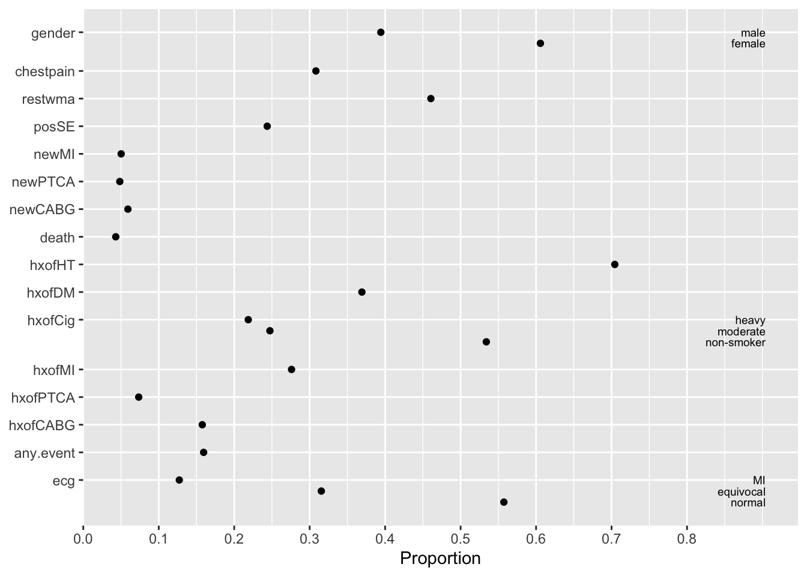
plot(describe) output
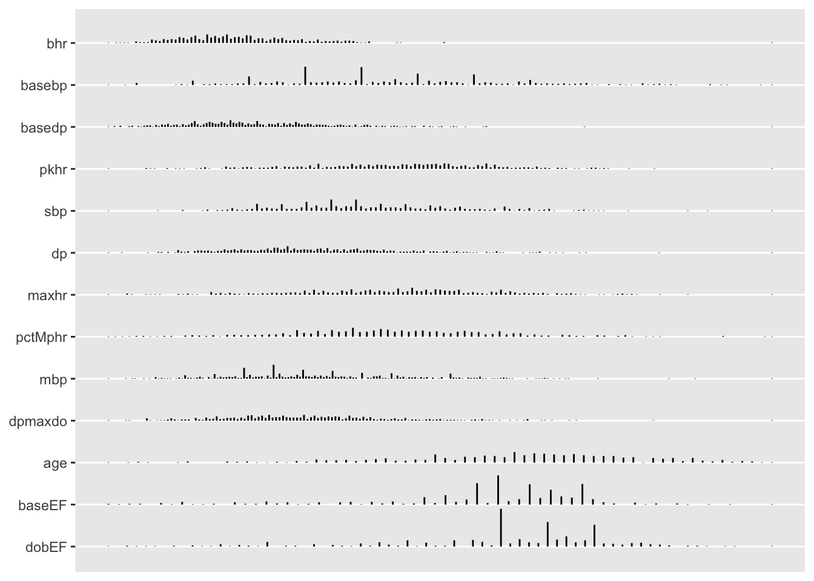
By specifying grType option you can instead get plotly graphics that use hover text to show more information, especially when hovering over the leftmost dot or tick mark for a variable.
options(grType='plotly')
cap <- '`plotly` `plot(describe)` output'
maketabs(plot(w, bvspace=2.5), wide=TRUE, cap=1, basecap=cap)plotly plot(describe) output
See this for other Hmisc functions for descriptive graphics and tables, especially for stratified descriptive statistics for categorical variables. The summaryM function prints a tabular summary of a mix of continuous and categorical variables. Here is an example where stratification is by history of myocardial infarction (MI).
require(data.table)
setDT(d) # turn d into a data table
# tables() with no arguments will give a concise summary of all active data tables
w <- d
w[, hxofMI := factor(hxofMI, 0 : 1, c('No history of MI', 'History of MI'))]
vars <- setdiff(names(d), 'hxofMI')
form <- as.formula(paste(paste(vars, collapse='+'), '~ hxofMI'))
print(form)bhr + basebp + basedp + pkhr + sbp + dp + dose + maxhr + pctMphr + mbp + dpmaxdo + dobdose + age + gender + baseEF + dobEF + chestpain + restwma + posSE + newMI + newPTCA + newCABG + death + hxofHT + hxofDM + hxofCig + hxofPTCA + hxofCABG + any.event + ecg ~ hxofMI
s <- summaryM(form, data=d, test=TRUE)
# Note: there is a problem with the width of the categorical variable
# plot. Neither fig.size() nor options(plotlyauto=FALSE) fixed it.
maketabs(
` ` ~ ` `, # empty tab
`Table 1` ~ print(s, exclude1=TRUE, npct='both', digits=3, middle.bold=TRUE),
`Categorical Variable Plot` ~ plot(s, which='categorical', vars=1 : 4) +
caption('`summaryM` plots') +
fig.size(width=6),
`Continuous Variable Plot` ~ plot(s, which='continuous', vars=1 : 4),
wide=TRUE)| Descriptive Statistics (N=558). | |||
| No history of MI N=404 |
History of MI N=154 |
Test Statistic |
|
|---|---|---|---|
Basal heart rate
bpm
|
65 74 85 | 63 72 84 | F1 556=1.41, P=0.2351 |
Basal blood pressure
mmHg
|
120 134 150 | 120 130 150 | F1 556=1.39, P=0.2381 |
Basal Double Product bhr*basebp
bpm*mmHg
|
8514 9874 11766 | 8026 9548 11297 | F1 556=3.32, P=0.0691 |
Peak heart rate
mmHg
|
107 123 136 | 104 120 132 | F1 556=2.35, P=0.1261 |
Systolic blood pressure
mmHg
|
124 146 174 | 115 134 158 | F1 556=12.1, P<0.0011 |
Double product pkhr*sbp
bpm*mmHg
|
14520 17783 21116 | 13198 15539 18885 | F1 556=15, P<0.0011 |
Dose of dobutamine given
mg
: 10 |
0.00 2⁄404 | 0.00 0⁄154 | χ26=8.77, P=0.1872 |
| 15 | 0.05 21⁄404 | 0.05 7⁄154 | |
| 20 | 0.10 40⁄404 | 0.05 7⁄154 | |
| 25 | 0.11 45⁄404 | 0.07 11⁄154 | |
| 30 | 0.11 43⁄404 | 0.14 21⁄154 | |
| 35 | 0.11 45⁄404 | 0.10 16⁄154 | |
| 40 | 0.51 208⁄404 | 0.60 92⁄154 | |
Maximum heart rate
bpm
|
107 122 134 | 102 118 130 | F1 556=4.05, P=0.0451 |
Percent maximum predicted heart rate achieved
%
|
69.0 78.0 89.0 | 70.0 77.0 87.5 | F1 556=0.5, P=0.4791 |
Maximum blood pressure
mmHg
|
138 154 180 | 130 142 162 | F1 556=13, P<0.0011 |
Double product on max dobutamine dose
bpm*mmHg
|
15654 18666 21664 | 14489 16785 19680 | F1 556=16.1, P<0.0011 |
Dobutamine dose at max double product
mg
: 5 |
0.01 4⁄404 | 0.02 3⁄154 | χ27=8.5, P=0.292 |
| 10 | 0.01 6⁄404 | 0.01 1⁄154 | |
| 15 | 0.11 43⁄404 | 0.08 12⁄154 | |
| 20 | 0.14 58⁄404 | 0.10 15⁄154 | |
| 25 | 0.13 54⁄404 | 0.11 17⁄154 | |
| 30 | 0.13 51⁄404 | 0.18 27⁄154 | |
| 35 | 0.10 40⁄404 | 0.14 22⁄154 | |
| 40 | 0.37 148⁄404 | 0.37 57⁄154 | |
Age
years
|
59.0 68.0 75.0 | 63.2 71.0 76.8 | F1 556=9.75, P=0.0021 |
| gender : female | 0.68 273⁄404 | 0.42 65⁄154 | χ21=30, P<0.0012 |
Baseline cardiac ejection fraction
%
|
55 59 63 | 40 54 60 | F1 556=56.4, P<0.0011 |
Ejection fraction on dobutamine
%
|
65.0 70.0 74.2 | 50.0 64.5 70.0 | F1 556=50.3, P<0.0011 |
| Chest pain | 0.29 119⁄404 | 0.34 53⁄154 | χ21=1.29, P=0.2572 |
| Resting wall motion abnormality on echocardiogram | 0.57 230⁄404 | 0.18 27⁄154 | χ21=69.7, P<0.0012 |
| Positive stress echocardiogram | 0.21 86⁄404 | 0.32 50⁄154 | χ21=7.56, P=0.0062 |
| New myocardial infarction | 0.03 14⁄404 | 0.09 14⁄154 | χ21=7.4, P=0.0072 |
| Recent angioplasty | 0.02 10⁄404 | 0.11 17⁄154 | χ21=17.8, P<0.0012 |
| Recent bypass surgery | 0.05 21⁄404 | 0.08 12⁄154 | χ21=1.35, P=0.2462 |
| death | 0.04 15⁄404 | 0.06 9⁄154 | χ21=1.23, P=0.2672 |
| History of hypertension | 0.69 280⁄404 | 0.73 113⁄154 | χ21=0.89, P=0.3462 |
| History of diabetes | 0.36 147⁄404 | 0.38 59⁄154 | χ21=0.18, P=0.6742 |
| History of smoking : heavy | 0.21 83⁄404 | 0.25 39⁄154 | χ22=3.16, P=0.2062 |
| moderate | 0.24 96⁄404 | 0.27 42⁄154 | |
| non-smoker | 0.56 225⁄404 | 0.47 73⁄154 | |
| History of angioplasty | 0.04 15⁄404 | 0.17 26⁄154 | χ21=28.4, P<0.0012 |
| History of coronary artery bypass surgery | 0.08 34⁄404 | 0.35 54⁄154 | χ21=59.6, P<0.0012 |
| Death, newMI, newPTCA, or newCABG | 0.12 48⁄404 | 0.27 41⁄154 | χ21=18.1, P<0.0012 |
| Baseline electrocardiogram diagnosis : normal | 0.59 240⁄404 | 0.46 71⁄154 | χ22=8, P=0.0182 |
| equivocal | 0.29 117⁄404 | 0.38 59⁄154 | |
| MI | 0.12 47⁄404 | 0.16 24⁄154 | |
| a b c represent the lower quartile a, the median b, and the upper quartile c for continuous variables. Tests used: 1Wilcoxon test; 2Pearson test . |
|||
summaryM plots
9.1.1 Descriptive Graphics for Continuous Variables
Semi-interactive stratified spike histograms are also useful descriptive plots. These plots also contain a superset of the quantiles used in box plots, and the legend is clickable, allowing any of the statistical summaries to be turned off.
d[, histboxp(x=maxhr, group=ecg, bins=200)]An advantage of spike histograms over regular histograms is that when no distinct values are very close together the plot shows actual data values instead of necessarily binning everything.
An exception is when the
Hmisc package functions produce sparklines in tables, where uniform binning is required.The Hmisc spikecomp function computes segment endpoints needed to construct a spike histogram. This makes it easy to draw spike histograms with ggplot2. Here histograms are annotated with quartiles.
g <- function(x) {
z <- quantile(x, (1:3)/4, na.rm=TRUE)
list(x=z, y1=-0.07, y2=-0.025)
}
s <- d[, spikecomp(maxhr, tresult='segments'), by=ecg]
qu <- d[, g(maxhr), by=ecg]
ggplot(s) + geom_segment(aes(x=x, y=y1, xend=x, yend=y2, alpha=I(0.3))) +
geom_segment(aes(x=x, y=y1, xend=x, yend=y2, col=I('red')), data=qu) +
scale_y_continuous(breaks=NULL, labels=NULL) + ylab('') +
facet_wrap(~ ecg) + xlab(hlab(maxhr))- 1
-
spikecompscales the \(y\)-axis from 0-1 for the spikes, soy1andy2are set to make small segments under the spikes. - 2
-
The \(x\)-axis label was constructed from the
labelandunitsofmaxhrby theHmischlabfunction, which looked for a data table nameddfor this information.
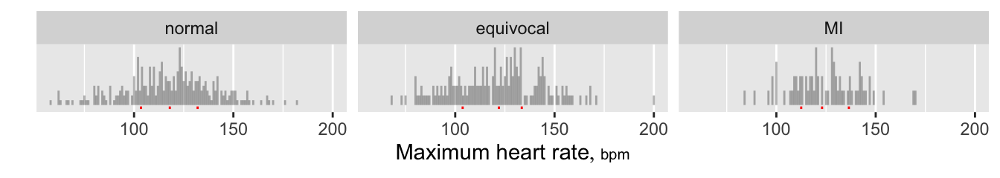
ggplot2
Empirical cumulative distribution functions (ECDFs) also provide high-resolution data displays, and allow direct reading of quantiles. A large advantage of ECDFs is that they do not use binning. The Hmisc ecdfSteps function computes coordinates of the steps that make up ECDFs. This is recommended over built-in methods such as in ggplot2 because with ecdfSteps you can control how far to horizontally extend a plot at the extremes. The default is to extend the function horizontally at its 0.0 and 1.0 values to \(\frac{1}{20}^\text{th}\) of the data range on either side. For reference medians are added.
g <- function(x) {
m <- as.double(median(x, na.rm=TRUE))
list(x=m, y1=0, y2=0.5)
}
w <- d[, ecdfSteps(maxhr), by=ecg]
meds <- d[, g(maxhr), by=ecg]
ggplot(w, aes(x, y, color=ecg)) + geom_step() +
geom_segment(aes(x=x, y=y1, xend=x, yend=y2, alpha=I(0.3)), data=meds) +
xlab(hlab(maxhr)) + ylab('')- 1
-
data.tablerequires consistency in the numeric storage mode. Sincemediancan return an integer we store its result consistently in double precision floating point.
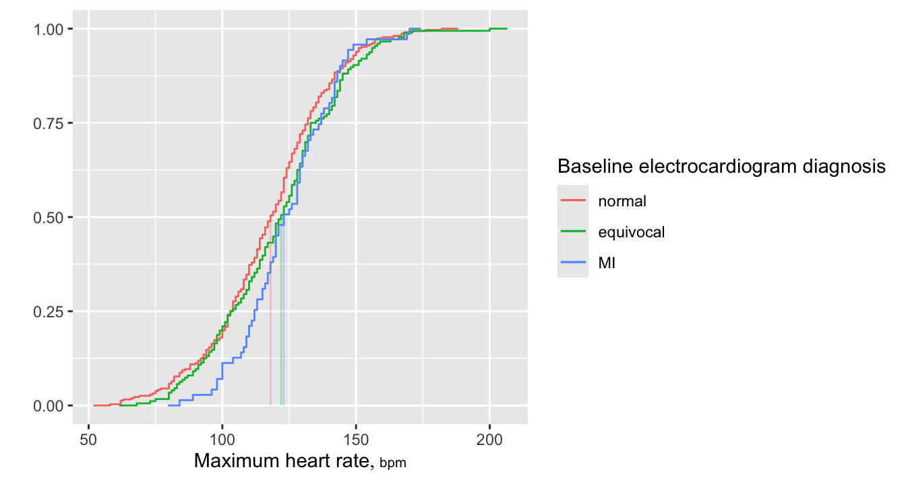
9.2 Longitudinal Continuous Y
For a continuous response variable measured longitudinally, two of the ways to display the data are
- “spaghetti plots” showing all data for all individual subjects, if the number of subjects is not very large
- finding clusters of individual subject curve characteristics and plotting a random sample of raw data curves within each cluster if the sample size is large
The Hmisc package curveRep function facilitates the latter approach using representative curves. It considers per-subject sample sizes and measurement time gaps as these will not only limit how we look at the data but may be informative, e.g., subjects who are failing may start to get more frequent measurements.
To demonstrate we simulate data in the following way.
- Simulate 200 subjects (curves) with per-curve sample sizes ranging from 1 to 10
- Make curves with odd-numbered IDs have a measurement time distribution that is random uniform [0,1] and those with even-numbered IDs have a time distribution that is half as wide but still centered at 0.5. Shift y values higher with increasing IDs
- Make 1/3 of subjects have a flat trajectory, 1/3 linear and not flat, and 1/3 quadratic
Request curveRep to cluster the 200 curves on the following characteristics:
kn=3sample size groups (curveRepactually used one more than this)kxdist=2time point distribution groups based here on the earliest and latest measurement times and the longest gap between any two measurements within a subjectk=4trajectory clusters. Trajectories are determined byloess-smoothing each subject’s curve and linearly interpolating the estimates to the same evenly-spaced grid of time points, then clustering on these 10 y-estimates. This captures intercepts, slopes, and shapes.
All subjects within each cluster are shown; we didn’t need to take random samples for 200 subjects. Results for the 4 per-curve sample size groups are placed in separate tabs.
set.seed(1)
N <- 200
nc <- sample(1:10, N, TRUE)
id <- rep(1:N, nc)
x <- y <- id
# Solve for coefficients of quadratic function such that it agrees with
# the linear function at x=0.25, 0.75 and is lower by -delta at x=0.5
delta <- -3
cof <- list(c(0, 0, 0), c(0, 10, 0), c(delta, 10, -2 * delta / (2 * 0.25^2)))
for(i in 1 : N) {
x[id==i] <- if(i %% 2) runif(nc[i]) else runif(nc[i], c(.25, .75))
shape <- sample(1:3, 1)
xc <- x[id == i] - 0.5
k <- cof[[shape]]
y[id == i] <- i/20 + k[1] + k[2] * xc + k[3] * xc ^ 2 +
runif(nc[i], -2.5, 2.5)
}
require(cluster)
w <- curveRep(x, y, id, kn=3, kxdist=2, k=4, p=10)
gg <- vector('list', 4)
nam <- rep('', 4)
for(i in 1 : 4) {
z <- plot(w, i, method='data') # method='data' available in Hmisc 4.7-1
z <- transform(z,
distribution = paste('Time Distribution:', distribution),
cluster = paste('Trajectory Cluster:', cluster))
gg[[i]] <-
if(i == 1)
ggplot(z, aes(x, y, color=curve)) + geom_point() +
facet_grid(distribution ~ cluster) +
theme(legend.position='none')
else
ggplot(z, aes(x, y, color=curve)) + geom_line() +
facet_grid(distribution ~ cluster) +
theme(legend.position='none')
nam[i] <- z$ninterval[1]
}
names(gg) <- nam
maketabs(gg, basecap='Representative curves determined by `curveRep` stratified by per-subject sample size ranges', cap=1)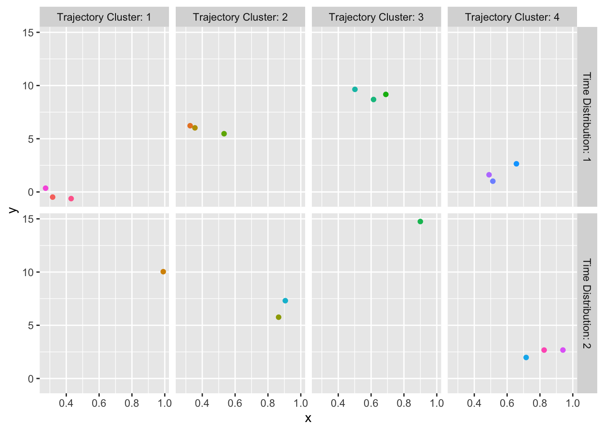
curveRep stratified by per-subject sample size ranges
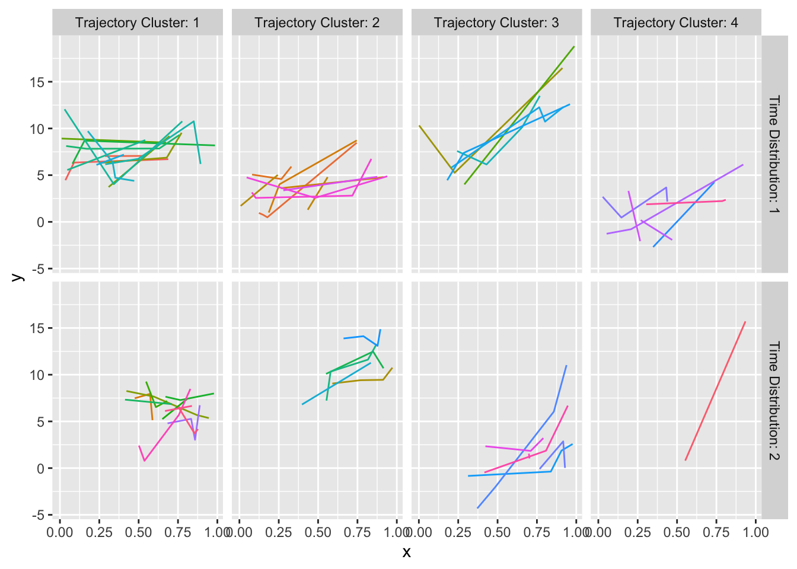
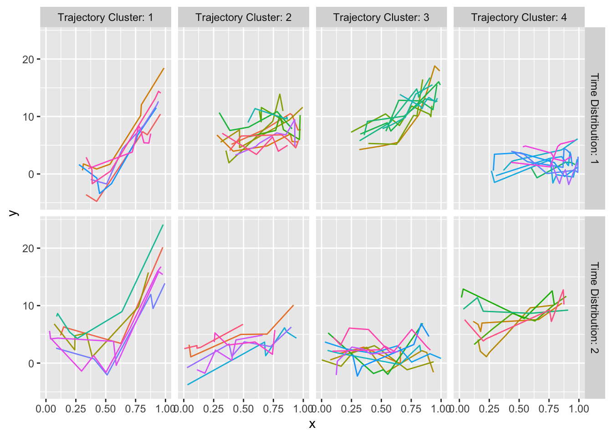
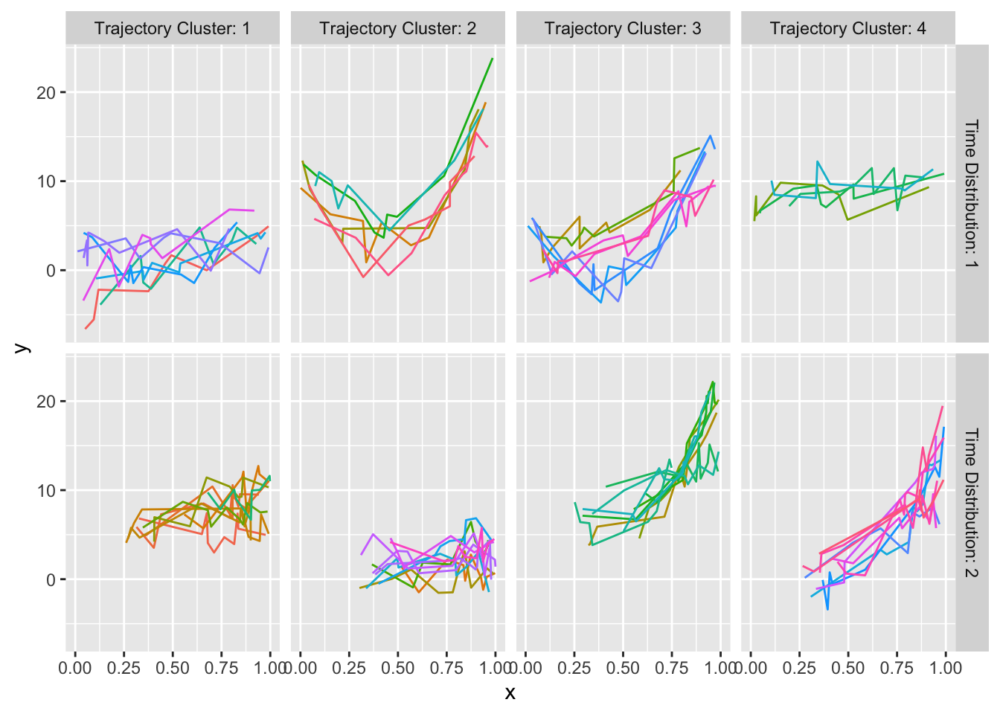
9.3 Longitudinal Ordinal Y
Continuous longitudinal Y may be analyzed flexibly using semiparametric models while being described using representative curves as just discussed. Now suppose that Y is discrete. There are three primary ways of describing such data graphically.
- Show event occurrences/trajectories for a random sample of subjects (
Hmisc::multEventChart) - Show all transition proportions if time is discrete (
Hmisc::propsTrans) - Show all state occupancy proportions if time is discrete (
Hmisc::propsPO)
Thanks to Lucy D’Agostino McGowan for writing most of the code for
multEventChartStarting with a multiple event chart, simulate data on 5 patients, then display all the raw data.
pt1 <- data.frame(pt=1, day=0:3,
status=.q(well, well, sick, 'very sick'))
pt2 <- data.frame(pt=2, day=c(1,2,4,6),
status=.q(sick, 'very sick', coma, death))
pt3 <- data.frame(pt=3, day=1:5,
status=.q(sick, 'very sick', sick, 'very sick', 'discharged'))
pt4 <- data.frame(pt=4, day=c(1:4, 10),
status=.q(well, sick, 'very sick', well, discharged))
d <- rbind(pt1, pt2, pt3, pt4)
d <- upData(d,
status = factor(status, .q(discharged, well, sick,
'very sick', coma, death)),
labels = c(day = 'Day'), print=FALSE)
kabl(pt1, pt2, pt3, pt4)
|
|
|
|
multEventChart(status ~ day + pt, data=d,
absorb=.q(death, discharged),
colorTitle='Status', sortbylast=TRUE) +
theme_classic() + theme(legend.position='bottom')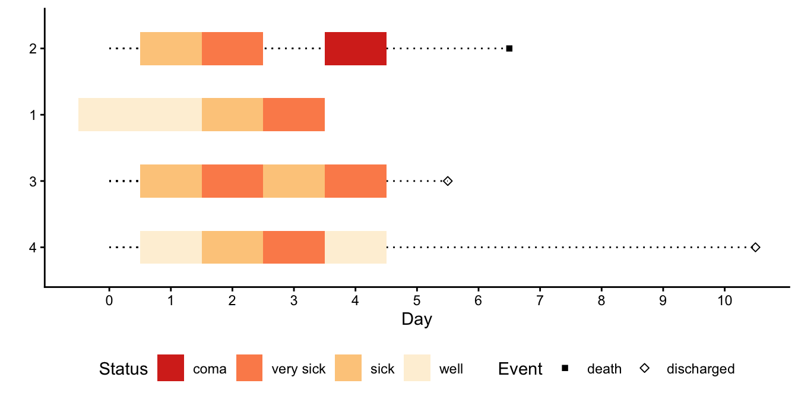
For an example of displaying transition proportions, whereby all the outcome information in the raw data is shown, simulate some random data. The result is a plotly graphic over which you hover the pointer to see details. The size of the bubbles is proportional to the proportion in that transition.
set.seed(1)
d <- expand.grid(id=1:30, time=1:7)
setDT(d) # convert to data.table
d[, sex := sample(c('female', 'male'), .N, replace=TRUE)]
d[, state := sample(LETTERS[1:4], .N, replace=TRUE)]
ggplotlyr(propsTrans(state ~ time + id, data=d))The final display doesn’t capture the within-subject correlation as done with the transition proportions, but is the most familiar display for longitudinal ordinal data as it shows proportions in the current states, which are cumulative incidence estimates for absorbing states.
Should absorbing states have occurred in the data you would need to carry these forward to the end of follow-up for
propsPO to work properly, even though the real data file would terminate follow-up at an absorbing event.ggplotlyr(propsPO(state ~ time + sex, data=d))9.4 Multiple Longitudinal Continuous Variables
When there are multiple longitudinal measurements, exploratory or descriptive analysis is more challenging. One can learn how the different longitudinal processes relate to each other by computing pairwise cross-correlations, time-stratified variable clustering, a matrix of pairwise correlation time-trends, and, in what may be called a third-order analysis, a thermometer-plot matrix of pairwise correlation coefficients where each correlation coefficient quantifies the correlation between time and the correlation coefficient between the indicated pair of variables.
Consider a longitudinal dataset of participants in a clinical trial safety study that was described here. The dataset is in the Vanderbilt Biostatistics data repository and is called safety. Fetch the data, keep only the needed variables, and show descriptive statistics.
getHdata(safety) # Internal dataset name was All
d <- All[, .q(id, week,
sbp, dbp, hr, axis, corr.qt, pr, qrs, rr, neutrophils,
alat, albumin, alk.phos, asat, basophils, bilirubin, bun,
chloride, creatinine, eosinophils, ggt, glucose,
hematocrit, hemoglobin, potassium, lymphocytes,
monocytes, sodium, platelets, protein, rbc, uric.acid, wbc)]
setDT(d, key=.q(id, week))
sparkline::sparkline(0)w <- describe(d)
maketabs(print(w, 'both'), wide=TRUE, initblank=TRUE)d Descriptives |
|||||||||||
| 33 Continous Variables of 34 Variables, 16464 Observations | |||||||||||
| Variable | Label | Units | n | Missing | Distinct | Info | Mean | pMedian | Gini |Δ| | Quantiles .05 .10 .25 .50 .75 .90 .95 |
|
|---|---|---|---|---|---|---|---|---|---|---|---|
| id | 16464 | 0 | 2058 | 1.000 | 1030 | 1030 | 686 | 103.2 206.0 515.0 1029.5 1544.0 1853.0 1955.8 | |||
| sbp | systolic blood pressure | mmHg | 12460 | 4004 | 114 | 0.992 | 131.7 | 131 | 18.2 | 108 110 120 130 140 152 160 | |
| dbp | diastolic blood pressure | mmHg | 12460 | 4004 | 79 | 0.978 | 78.07 | 78 | 10.51 | 60 68 70 80 84 90 94 | |
| hr | heart rate | bpm | 12458 | 4006 | 87 | 0.996 | 76.15 | 76 | 12.12 | 60 63 68 76 83 90 96 | |
| axis | degree | 12356 | 4108 | 326 | 1.000 | 34.43 | 39.5 | 52.36 | -61 -37 7 48 70 81 88 | ||
| corr.qt | corrected qt | msec | 12355 | 4109 | 1832 | 1.000 | 424.2 | 422.2 | 24.27 | 397.3 400.6 408.0 419.6 436.4 454.7 467.1 | |
| pr | msec | 12030 | 4434 | 121 | 0.997 | 158.7 | 156 | 27.08 | 124.0 132.0 144.0 156.0 172.0 188.0 201.5 | ||
| qrs | msec | 12356 | 4108 | 70 | 0.990 | 92.91 | 90 | 17.09 | 72 76 84 88 100 112 128 | ||
| rr | msec | 12356 | 4108 | 97 | 0.999 | 837.8 | 832.4 | 164.3 | 618.5 659.3 731.7 821.9 937.5 1034.4 1090.9 | ||
| neutrophils | neutrophils absolute | 109/L | 9079 | 7385 | 868 | 1.000 | 4.593 | 4.44 | 1.734 | 2.53 2.84 3.50 4.33 5.36 6.58 7.54 | |
| alat | alanine aminotransferase | IU/L | 9129 | 7335 | 113 | 0.998 | 18.99 | 17 | 10.76 | 8 9 12 16 22 31 39 | |
| albumin | G/L | 9118 | 7346 | 26 | 0.982 | 42.15 | 42 | 2.6 | 38 39 41 42 44 45 46 | ||
| alk.phos | alkaline phosphatase | IU/L | 9110 | 7354 | 185 | 1.000 | 76.3 | 74 | 24.44 | 46 52 61 73 87 104 118 | |
| asat | aspartate aminotransferase | IU/L | 9123 | 7341 | 99 | 0.996 | 19.78 | 18.5 | 7.614 | 12 13 15 18 22 27 33 | |
| basophils | 109/L | 2824 | 13640 | 596 | 0.999 | 0.03488 | 0.03105 | 0.03131 | 0.00000 0.00440 0.01420 0.02760 0.04900 0.07500 0.09265 | ||
| bilirubin | total bilirubin | UMOL/L | 9112 | 7352 | 67 | 0.997 | 10.5 | 10 | 4.72 | 5.13 6.00 7.00 10.00 12.00 16.00 19.00 | |
| bun | blood urea nitrogen | MMOL/L | 9126 | 7338 | 174 | 1.000 | 5.776 | 5.65 | 2.051 | 3.200 3.600 4.500 5.500 6.783 8.200 9.000 | |
| chloride | MMOL/L | 9167 | 7297 | 30 | 0.990 | 103.9 | 104 | 3.589 | 98 100 102 104 106 108 109 | ||
| creatinine | UMOL/L | 9122 | 7342 | 174 | 0.999 | 76.73 | 75.14 | 21.08 | 51 54 63 74 87 99 110 | ||
| eosinophils | 109/L | 2824 | 13640 | 1450 | 1.000 | 0.2289 | 0.207 | 0.1664 | 0.04805 0.07320 0.11800 0.19090 0.29677 0.43375 0.53868 | ||
| ggt | gamma glutamyl transferase | IU/L | 9114 | 7350 | 240 | 0.999 | 36.74 | 29.5 | 27.8 | 13 15 19 26 41 68 92 | |
| glucose | glucose - random | MMOL/L | 8323 | 8141 | 349 | 1.000 | 6.055 | 5.678 | 1.797 | 4.200 4.500 5.000 5.600 6.384 7.900 9.688 | |
| hematocrit | % | 9129 | 7335 | 265 | 1.000 | 43.83 | 43.85 | 4.356 | 37.5 38.9 41.3 43.9 46.3 48.6 50.1 | ||
| hemoglobin | G/L | 9129 | 7335 | 183 | 1.000 | 146.6 | 146.8 | 14.35 | 125.0 130.0 139.0 146.6 154.7 161.9 166.8 | ||
| potassium | MMOL/L | 9138 | 7326 | 48 | 0.993 | 4.516 | 4.5 | 0.4576 | 3.9 4.0 4.3 4.5 4.7 5.0 5.2 | ||
| lymphocytes | 109/L | 2824 | 13640 | 2228 | 1.000 | 1.902 | 1.852 | 0.7091 | 1.031 1.155 1.452 1.818 2.244 2.738 3.119 | ||
| monocytes | 109/L | 2824 | 13640 | 1492 | 1.000 | 0.4611 | 0.45 | 0.2053 | 0.1947 0.2451 0.3355 0.4413 0.5619 0.6911 0.7923 | ||
| sodium | MMOL/L | 9163 | 7301 | 33 | 0.985 | 140.8 | 141 | 3.022 | 136 137 139 141 143 144 145 | ||
| platelets | 109/L | 9124 | 7340 | 419 | 1.000 | 235.9 | 232 | 69.36 | 147 164 193 229 270 315 349 | ||
| protein | total protein | G/L | 9124 | 7340 | 42 | 0.995 | 70.44 | 70.5 | 4.963 | 63 65 67 70 73 76 78 | |
| rbc | red blood cell count | 1012/L | 9128 | 7336 | 143 | 0.995 | 4.673 | 4.65 | 0.5051 | 3.9 4.1 4.4 4.7 5.0 5.2 5.4 | |
| uric.acid | uric acid | UMOL/L | 9142 | 7322 | 571 | 1.000 | 323.2 | 320.2 | 95.77 | 192.0 219.0 264.0 317.0 376.0 434.2 473.0 | |
| wbc | white blood cell count | 109/L | 9129 | 7335 | 154 | 1.000 | 7.34 | 7.2 | 2.139 | 4.7 5.1 6.0 7.1 8.4 9.8 10.9 | |
d Descriptives |
|||||||||
| 1 Categorical Variables of 34 Variables, 16464 Observations | |||||||||
| Variable | Label | n | Missing | Distinct | Info | Mean | pMedian | Gini |Δ| | |
|---|---|---|---|---|---|---|---|---|---|
| week | Week | 16464 | 0 | 8 | 0.984 | 7.875 | 8 | 7.782 | |
Show the frequency distribution of the set of distinct time points per subject.
w <- d[, .(uw=paste(sort(week), collapse=' ')), by=.(id)]
w[, table(uw)]uw
0 1 2 4 8 12 16 20
2058 Every subject has a record for every week. However there are many NAs for several of the variables.
plot(naclus(d))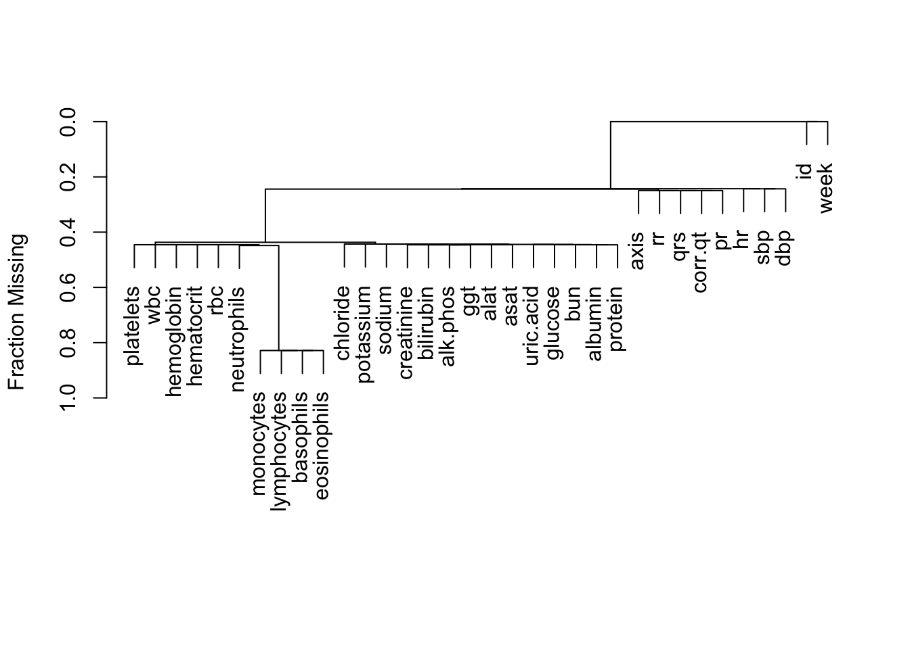
Let’s remove the variables that are missing more than 0.8 of the time.
set(d, j=.q(monocytes, lymphocytes, basophils, eosinophils), value=NULL)9.4.1 Cross-Correlation
Compute all possible cross-correlations. The cross-correlation of two signals quantifies how closely the two signals track over time. It uses time-paired data but does not otherwise use the absolute times or the ordering of times. The dataset is a tall and thin dataset with one row per subject per time and one column per lab measurement, so it is already set up for computing cross-correlations. We just need to compute the correlations separately by subject, then average them over subjects. Spearman rank correlations are used throughout.
# Get variables to correlate
v <- setdiff(names(d), .q(week, id))
# Function to create a matrix of Spearman correlations using
# Hmisc::rcorr
r <- function(u) rcorr(as.matrix(u), type='spearman')$r
# Make a list weith raw data, one element per subject
s <- split(d[, ..v], d$id)
# Make a list of correlation matrices, one per subject
R <- lapply(s, r)
# Combine all these into an array with an extra dimension for subjects
R <- array(unlist(R), dim=c(length(v), length(v), length(R)),
dimnames=list(v, v, NULL))
# Compute mean (separately by row and col var. combinations)
# over subjects, ignoring NAs
R <- apply(R, 1:2, mean, na.rm=TRUE)
# Plot the matrix using Hmisc::plotCorrM
plotCorrM(R, xangle=45)[[1]]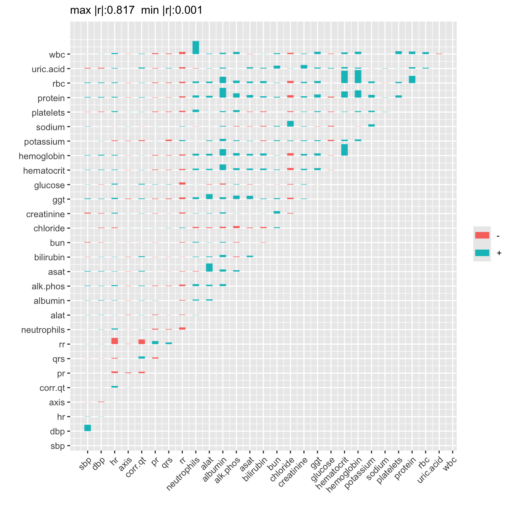
The variables that move strongly together over time are WBC and neutrophils, RBC and hemotocrit, RBC and hemoglobin, hematocrit and hemoglobin, no surprises. Let’s see how this compares to the ordinary correlation matrix obtained by pooling all the subjects, and ignoring which measurements came from which subjects.
R <- r(d[, ..v])
plotCorrM(R, xangle=45)[[1]]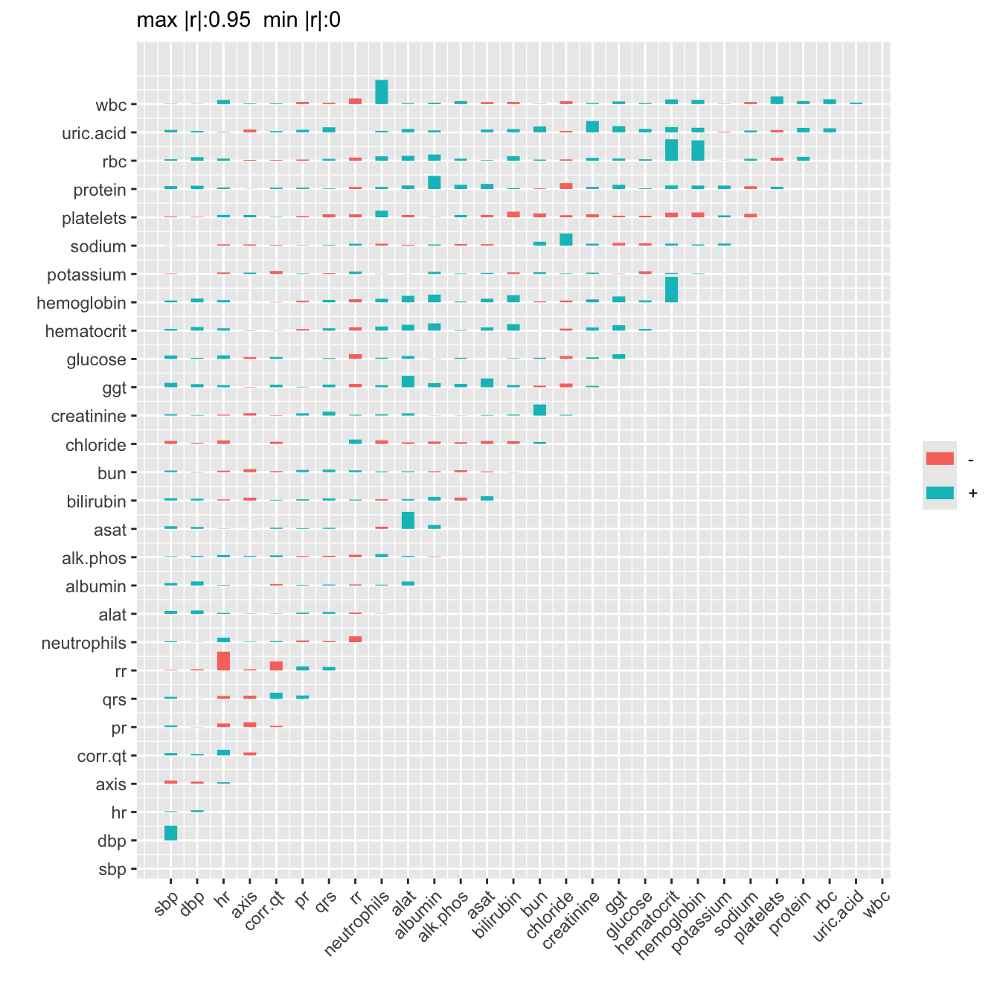
9.4.2 Time-Stratified Variable Clustering
Let’s describe how the relationships among variables appear to change over time, if they do. We do this by running variable clustering separately by follow-up time. Ignore week 1 when little data were collected.
par(mfrow=c(4,2))
g <- function(x, wk) {
plot(varclus(as.matrix(x)))
title(sub=paste('Week', wk), adj=0)
invisible()
}
d[week != 1, g(.SD, week), by=.(week), .SDcols=v]Empty data.table (0 rows and 1 cols): week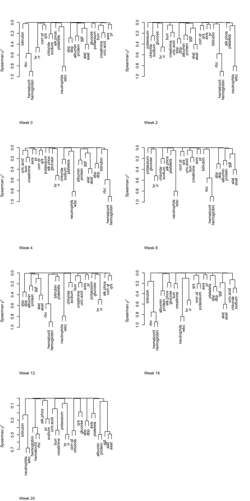
9.4.3 Time Trends in Correlations
The Hmisc package plotMultSim function takes a series of similarity matrices and plots trends in their components. The default similarity measure is the squared Spearman’s correlation coefficient. A 3-dimensional array s is used to hold similarity matrices computed for each week.
wks <- setdiff(sort(unique(d$week)), 1)
s <- array(NA, c(length(v), length(v), length(wks)),
dimnames=list(v, v, NULL))
for(i in 1 : length(wks))
s[, , i] <- varclus(as.matrix(d[week==wks[i], ..v]))$sim
plotMultSim(s, wks, slim=c(0,1), labelx=FALSE, xspace=5)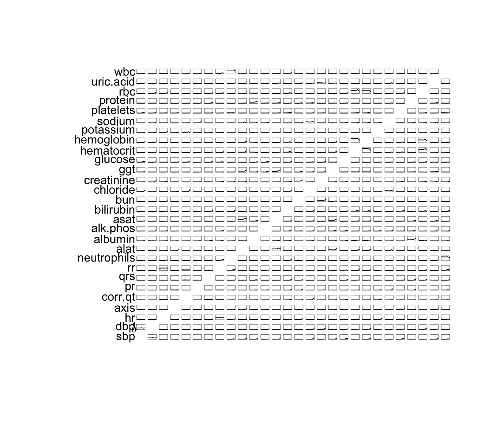
9.4.4 Correlation Time Trend Summaries
Take the similarity array just computed, and reduce it by one dimension by computing the linear correlation between time and Spearman’s \(\rho^2\).
k <- dim(s)
r <- matrix(0., nrow=k[1], ncol=k[2],
dimnames=dimnames(s)[1:2])
for(i in 1 : k[1])
for(j in 1 : k[2])
if(i != j) r[i, j] <- cor(wks, s[i, j, ])
plotCorrM(r, xangle=45)[[1]]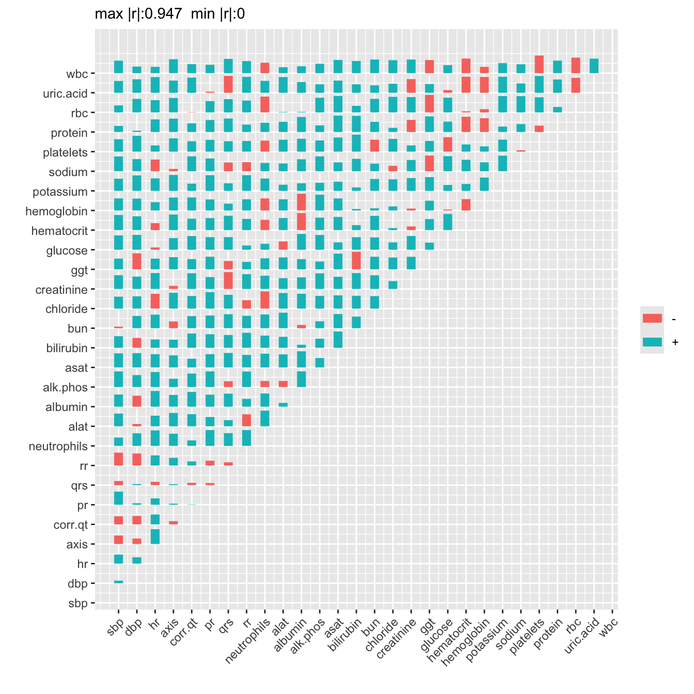
The correlation that is changing the most over time is correlation between the following two variables.
v[row(r)[abs(r) == max(abs(r))]][1] "wbc" "platelets"9.5 Adverse Event Chart
When there is a potentially large number of event types, such as adverse events (AEs) in a clinical trial, and the event timing is not considered, a dot chart is an excellent way to present the proportion of subjects suffering each type of AE. The AEs can be sorted in descending order by the difference in proportions between treatments, and plotly hover text can display more details. Half-width confidence intervals are used (see Section 15.6). An AE chart is easily produced using the aePlot function in qreport. aePlot expects the dataset to have one record per subject per AE, so the dataset itself does not define the proper denominator and this must be specified by the user (see denom below). The color coded needles in the right margin are guideposts to which denominators are being used in the analysis (details are here).
getHdata(aeTestData) # original data source: HH package
# One record per subject per adverse event
# For this example, the denominators for the two treatments in the
# pop-up needles will be incorrect because the dataset did not have
# subject IDs.
ae <- aeTestData
# qreport requires us to define official clinical trial counts and
# name of treatment variable
denom <- c(enrolled = 1000,
randomized = 400,
a=212, b=188)
setqreportOption(tx.var='treat', denom=denom)
aePlot(event ~ treat, data=ae, minincidence=.05, size='wide')![image](data:image/png;base64,
iVBORw0KGgoAAAANSUhEUgAAABkAAAASCAYAAACuLnWgAAAEDmlDQ1BrQ0dDb2xvclNwYWNlR2VuZXJpY1JHQgAAOI2NVV1oHFUUPpu5syskzoPUpqaSDv41lLRsUtGE2uj+ZbNt3CyTbLRBkMns3Z1pJjPj/KRpKT4UQRDBqOCT4P9bwSchaqvtiy2itFCiBIMo+ND6R6HSFwnruTOzu5O4a73L3PnmnO9+595z7t4LkLgsW5beJQIsGq4t5dPis8fmxMQ6dMF90A190C0rjpUqlSYBG+PCv9rt7yDG3tf2t/f/Z+uuUEcBiN2F2Kw4yiLiZQD+FcWyXYAEQfvICddi+AnEO2ycIOISw7UAVxieD/Cyz5mRMohfRSwoqoz+xNuIB+cj9loEB3Pw2448NaitKSLLRck2q5pOI9O9g/t/tkXda8Tbg0+PszB9FN8DuPaXKnKW4YcQn1Xk3HSIry5ps8UQ/2W5aQnxIwBdu7yFcgrxPsRjVXu8HOh0qao30cArp9SZZxDfg3h1wTzKxu5E/LUxX5wKdX5SnAzmDx4A4OIqLbB69yMesE1pKojLjVdoNsfyiPi45hZmAn3uLWdpOtfQOaVmikEs7ovj8hFWpz7EV6mel0L9Xy23FMYlPYZenAx0yDB1/PX6dledmQjikjkXCxqMJS9WtfFCyH9XtSekEF+2dH+P4tzITduTygGfv58a5VCTH5PtXD7EFZiNyUDBhHnsFTBgE0SQIA9pfFtgo6cKGuhooeilaKH41eDs38Ip+f4At1Rq/sjr6NEwQqb/I/DQqsLvaFUjvAx+eWirddAJZnAj1DFJL0mSg/gcIpPkMBkhoyCSJ8lTZIxk0TpKDjXHliJzZPO50dR5ASNSnzeLvIvod0HG/mdkmOC0z8VKnzcQ2M/Yz2vKldduXjp9bleLu0ZWn7vWc+l0JGcaai10yNrUnXLP/8Jf59ewX+c3Wgz+B34Df+vbVrc16zTMVgp9um9bxEfzPU5kPqUtVWxhs6OiWTVW+gIfywB9uXi7CGcGW/zk98k/kmvJ95IfJn/j3uQ+4c5zn3Kfcd+AyF3gLnJfcl9xH3OfR2rUee80a+6vo7EK5mmXUdyfQlrYLTwoZIU9wsPCZEtP6BWGhAlhL3p2N6sTjRdduwbHsG9kq32sgBepc+xurLPW4T9URpYGJ3ym4+8zA05u44QjST8ZIoVtu3qE7fWmdn5LPdqvgcZz8Ww8BWJ8X3w0PhQ/wnCDGd+LvlHs8dRy6bLLDuKMaZ20tZrqisPJ5ONiCq8yKhYM5cCgKOu66Lsc0aYOtZdo5QCwezI4wm9J/v0X23mlZXOfBjj8Jzv3WrY5D+CsA9D7aMs2gGfjve8ArD6mePZSeCfEYt8CONWDw8FXTxrPqx/r9Vt4biXeANh8vV7/+/16ffMD1N8AuKD/A/8leAvFY9bLAAAAOGVYSWZNTQAqAAAACAABh2kABAAAAAEAAAAaAAAAAAACoAIABAAAAAEAAAAZoAMABAAAAAEAAAASAAAAAAzrhHUAAADTSURBVDgRY3z+/Pl/BhwgXSiI4QrbWQaZPwoMK98cxFCVWveF4dmrfwyaSswMPWXcGPLC0/UYmH59ZmCRkJDAkIQJsDGwgpksLCwM2NQxM98Hyv9jYGVjxSr/l4kJrB9CwkylET1qCUkBO3yCi+XFixc4vf5L6DcDAxsDw58/fxhevMFU9/fvX7De379+M2AzR/jfPwZQUDFxTpvFwHzjJk6LqCHBwt3cxsC9YiUDy62rGOZRNzO+eo1hATUFhk/qGvUJSemCBaT637//WDMTtTIjAH/kUE9c59u4AAAAAElFTkSuQmCC)
| Category | N | Used |
|---|---|---|
| enrolled | 1000 | 400 |
| randomized | 400 | 400 |
| a | 212 | 212 |
| b | 188 | 188 |
Proportion of adverse events by Treatment sorted by descending risk difference. 3 events with less than 0.05 incidence in all groups are not shown (Hyperkalemia, Rash, Weight Decrease).
For a simpler, non-interactive chart we can use the greport package.
require(greport)
setgreportOption(denom=denom, tx.var='treat', texdir='/tmp', gtype='interactive')
eReport(event ~ treat, data=ae, minincidence=0.05)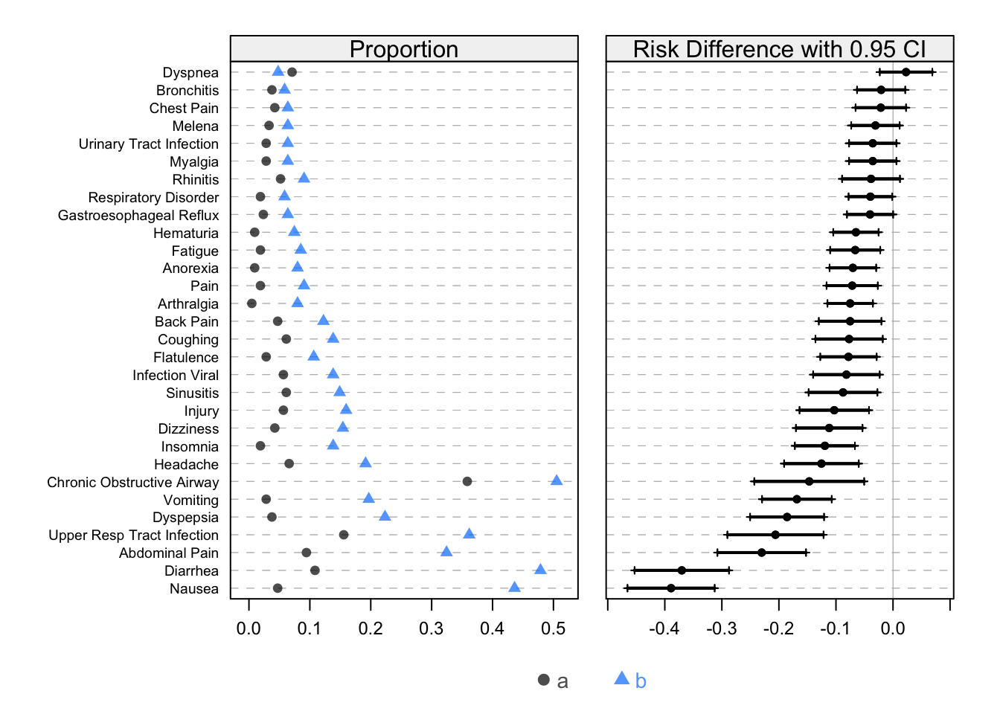
Here is a ggplot2 way of doing something similar, using code drafted by ChatGPT then heavily edited. Start with the raw data. The patchwork package is used to combine two panels.
require(data.table)
setDT(ae)
# Compute AE frequencies for each AE event and treatment group
w <- ae[, .(freq=.N), by=.(event, treat)]
# Compute denominators for each treatment
w[, N := denom[as.character(treat)]]
# Compute proportions and SEs
w[, prop := freq / N]
w[, se := sqrt(prop * (1 - prop) / N)]
plot2panel <- function(y, g, stat, se, statlabel='Proportion',
sortby = c("none", "average", "difference"),
conf.int=0.95) {
require(patchwork)
sortby <- match.arg(sortby)
# --- Prepare data ---
d <- data.table(y = y, g = g, stat = stat, se = se)
glev <- levels(g)
if (length(glev) != 2)
stop("Argument g must be a factor with exactly two levels.")
# --- Compute differences and averages within y ---
d_diff <- d[, .(
stat_diff = stat[g == glev[1]] - stat[g == glev[2]],
se_diff = sqrt(se[g == glev[1]]^2 + se[g == glev[2]]^2),
stat_avg = mean(stat)
), by = y]
# --- Sorting of y levels ---
ylev <- switch(
sortby,
none = levels(y),
average = d_diff[order(stat_avg), y],
difference = d_diff[order(stat_diff), y]
)
d[, y := factor(y, levels = ylev)]
d_diff[, y := factor(y, levels = ylev)]
# --- Panel A ---
pA <- ggplot(d, aes(x = stat, y = y, shape = g, fill = g)) +
geom_point(size = 2, color = "black") +
scale_shape_manual(values = c(16, 24)) +
scale_fill_manual(values = c("black", "lightblue")) +
labs(x = NULL, y = NULL, title = statlabel) +
theme_minimal(base_size = 12) +
theme(
legend.position = "bottom",
plot.title = element_text(hjust = 0.5, face = "bold"),
axis.title.y = element_blank(),
panel.border = element_rect(color = "black", fill = NA, size = 0.5)
)
# --- Panel B ---
zcrit <- qnorm((1 + conf.int) / 2)
pB <- ggplot(d_diff, aes(x = stat_diff, y = y)) +
geom_vline(xintercept = 0, color = "red", alpha = 0.5) +
geom_errorbar(mapping =
aes(xmin = stat_diff - zcrit * se_diff,
xmax = stat_diff + zcrit * se_diff),
orientation = "y", width = 0.2) +
geom_point(size = 2) +
labs(x = NULL, y = NULL, title = "Difference with 0.95 CI") +
theme_minimal(base_size = 12) +
theme(
axis.text.y = element_blank(),
plot.title = element_text(hjust = 0.5, face = "bold"),
axis.title.y = element_blank(),
panel.border = element_rect(color = "black", fill = NA, size = 0.5)
)
# --- Combine panels with small gap ---
pA + pB + plot_layout(ncol = 2, widths = c(1, 1)) &
theme(plot.margin = unit(c(0, 0.25, 0, 0), "cm"))
}
w[, plot2panel(event, treat, prop, se, sortby = "difference")]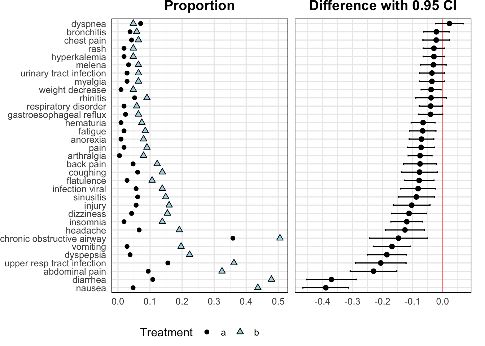
9.6 Continuous Event Times
For time-to-event data with possibly multiple types of events, an event chart is a good way to show the raw outcome data for a sample of up to perhaps 40 subjects. The Hmisc package offers the event.chart function written by Jack Lee, Kenneth Hess, and Joel Dubin. Here is an example they provided. Patients are sorted by diagnosis date.
getHdata(cdcaids)
event.chart(cdcaids,
subset.c=.q(infedate, diagdate, dethdate, censdate),
x.lab = 'Observation Dates',
y.lab='Patients',
titl='AIDS Data Calendar Event Chart',
point.pch=c(1,2,15,0), point.cex=c(1,1,0.8,0.8),
legend.plot=TRUE, legend.location='i', legend.cex=0.8,
legend.point.text=.q(transfusion,'AIDS diagnosis',death,censored),
legend.point.at = list(c(7210, 8100), c(35, 27))) 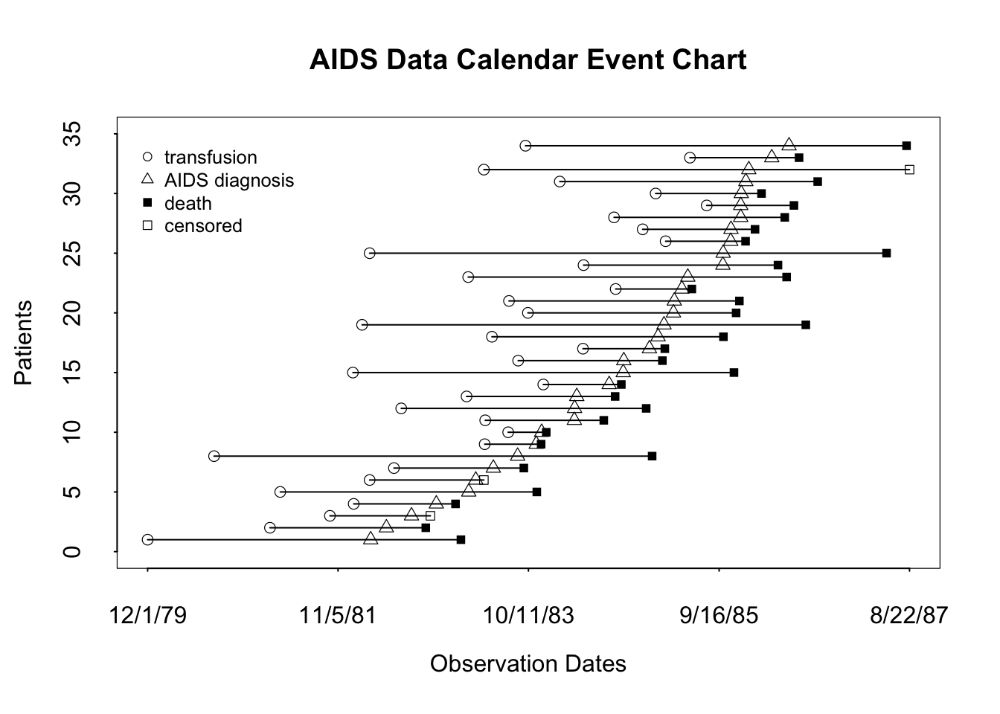
9.7 Describing Variable Interrelationships
The most basic way to examine interrelationships among variables is to graphically depict a correlation matrix. Below is an example on support using the Spearman’s \(\rho\) rank correlation coefficient. Another good descriptive analysis to help understand relationships among variables and redundancies/collinearities is variable clustering. Here one clusters on variables instead of observations, and instead of a distance matrix we have a similarly matrix. A good default similarity matrix is based on the square of \(\rho\). In order to restrict ourselves to unsupervised learning, also called data reduction, we restrict attention to non-outcome variables in both displays. The vClus function in qreport runs the dataset, after excluding some variables, through the Hmisc dataframeReduce function to eliminate variables that are missing more than 0.4 of the time and to ignore character or factor variables having more than 10 levels. Binary variables having prevalence < 0.05 are dropped, and categorical variables having < 0.05 of their non-missing values in a category will have such low-frequency categories combined into an “other” category for purposes of computing all the correlation coefficients.
Normally one would omit the
fracmiss, maxlevels, minprev arguments as the default values are reasonable.getHdata(support)
outcomes <- .q(slos, charges, totcst, totmcst, avtisst,
d.time, death, hospdead, sfdm2)
vClus(support, exclude=outcomes, corrmatrix=TRUE,
fracmiss=0.4, maxlevels=10, minprev=0.05,
label='fig-varclus')| Variable | Reason |
|---|---|
| dzgroup | grouped categories |
| race | grouped categories |
| glucose | fraction missing>0.4 |
| bun | fraction missing>0.4 |
| urine | fraction missing>0.4 |
| adlp | fraction missing>0.4 |
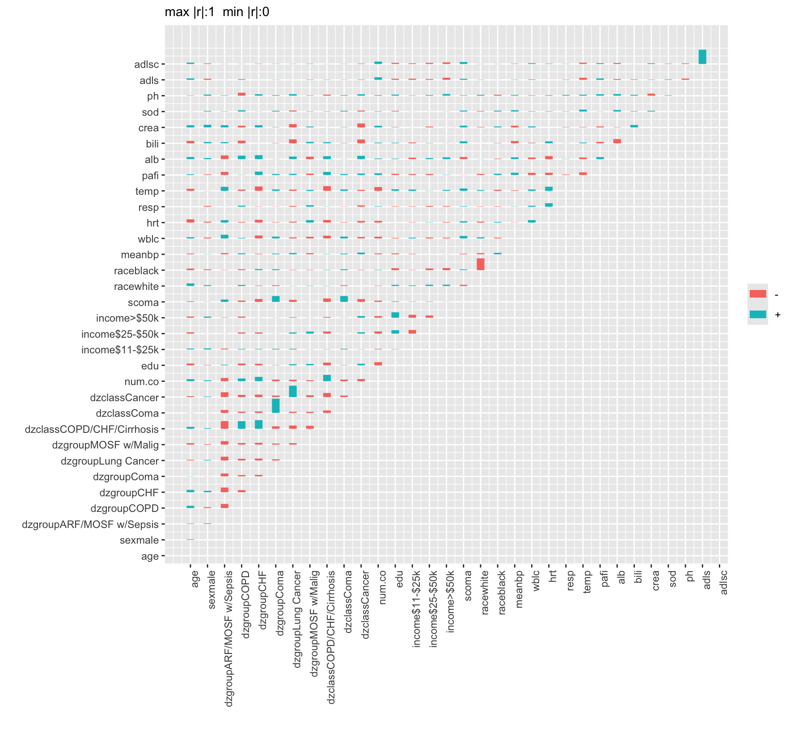
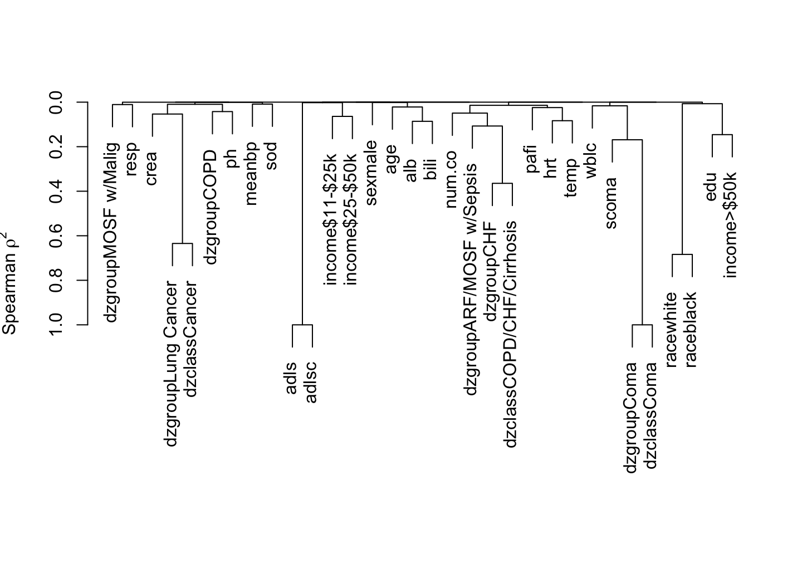
The most strongly related variables are competing indicator variables for categories from the same variable, scoma vs. dzgroup “Coma”, and dzgroup “Cancer” vs. dzclass “Cancer”. The first type of relationship generates a strong negative correlation because if you’re in one category you can’t be in the other.